Overview and Objective
Banks and financial investment firms spend a lot of money to store, analyze, and gain insights from their customer data to improve their businesses. The customer data incluldes features (See below) such as customer loan information, job, demography, education level, transaction history, and so on. The goal of this project is to use this data to train a model that would eventually help banks imporve their telemarketing campaign by
- Identifying the groups of customers that are more likely to make a term deposit
- Obviating the need to make redundant customer calls to the customers that are already enrolled
- Figuring out the customer characteristics and the potential problems that lead to unsuccessful campaigns and come up with solutions to address them
Objective
The main objectives of this project are
- to use different data explanatory analysis tools to gain a better understanding regarding the correlations between the variables
- to compare the performance of different classification models in predicting the telemarketing campaign's outcome
- to find out whether adding more features will necessarilty improve the performance of the model or not
Data Collection/Metadata
The data contains a Portuguese banking institution's telemarketing campaign information. Often, more than one contact to the same client was required in order to assess if the product (bank term deposit) would ('yes') or would not ('no') be subscribed.
The source provides two versions of the dataset. One (bank-additional-full.csv with 20 features) that includes social, economic, and bank related attributes and another one (bank-full.csv with 16 features) which does not include them. The second dataset, however, contains a balance column which is missing in the first dataset (See below).
Input variables are obtained from the data source and are grouped into different categories. Before starting to work with any data, we would always try our best to gain a good understanding regarding the data variables and what they represent. I added some more explanation from different sources about the variables that I had difficulty understanding.
Features
Client-related
- age (numeric)
- job: type of job (categorical): 'admin.', 'blue-collar', 'entrepreneur', 'housemaid', 'management', 'retired', 'self-employed', 'services', 'student', 'technician', 'unemployed', 'unknown'
- marital: marital status (categorical): 'divorced', 'married', 'single', 'unknown'; note: 'divorced' means divorced or widowed
- education: (categorical):'basic.4y', 'basic.6y', 'basic.9y', 'high.school', 'illiterate', 'professional.course', 'university.degree', 'unknown'
- default: has credit in default? (categorical): 'no', 'yes', 'unknown'
- balance: customer balance (numeric)
- housing: received housing loan? (categorical): 'no', 'yes', 'unknown'
- loan: received personal loan? (categorical): 'no', 'yes', 'unknown'
Related to the contacts made with the client
- contact: last contact communication type (categorical): 'cellular', 'telephone'
- month: last contact month of year (categorical): 'jan', 'feb', 'mar', ..., 'nov', 'dec'
- day: last contact day of the week (numerical): 1-5
- duration: last contact duration, in seconds (numeric).
- campaign: number of contacts, including the last contact, performed during this campaign and for this client (numeric )
- pdays: number of days that passed by after the client was last contacted from a previous campaign (numeric; 999 or -1 means client was not previously contacted
- previous: number of contacts performed before this campaign and for this client (numeric)
- poutcome: outcome of the previous marketing campaign (categorical): 'failure', 'nonexistent', 'success'
Social and economic context attributes
- emp.var.rate: employment variation rate - quarterly indicator (numeric) More on this: measure of the change in availability of the labour resources over a certain period of time (in this case, avergae over 3 months) (source).
- cons.price.idx: consumer price index - monthly indicator (numeric) More on this: Consumer Price Index (CPI) measures the average change over time (in this case, 1 month ) in the prices paid by urban consumers for a market basket of consumer goods and services (source).
- cons.conf.idx: consumer confidence index - monthly indicator (numeric) More on this: Consumer Confidence Index (CCI) measures how optimistic or pessimistic consumers are regarding their expected financial situation (source).
Related to bank
- euribor3m: euribor 3 month rate - daily indicator (numeric) More on this: Euribor rates represent the average interest rate (over a certain period of time, in this case, 3 months) that eurozone banks charge each other for uncollateralized loans (source).
- nr.employed: number of bank employees - quarterly indicator (numeric)
Outcome
y: has the client subscribed a term deposit? (binary): 'yes', 'no'. 'yes' means that the bank telemarketing campaign was successful.
Data Preprocessing
Load Libraries
import numpy as np
import pandas as pd
import warnings
import matplotlib
import seaborn as sns
import math
warnings.filterwarnings('ignore')
from matplotlib import rc, rcParams
from matplotlib import cm as cm
import matplotlib.pyplot as plt
from IPython.core.display import HTML
from IPython.display import Image
matplotlib.rcParams['font.family'] = 'serif'
rc('font',**{'family':'serif','serif':['Times']})
rc('text', usetex=True)
pd.set_option('display.float_format', lambda x: '%.2f' % x)
sns.set(rc={"figure.dpi":100})
Load Data
df = pd.read_csv('bank-additional/bank-full.csv', sep=r";", engine='python', index_col=None)
df.head()
| age | job | marital | education | default | balance | housing | loan | contact | day | month | duration | campaign | pdays | previous | poutcome | y | |
|---|---|---|---|---|---|---|---|---|---|---|---|---|---|---|---|---|---|
| 0 | 58 | management | married | tertiary | no | 2143 | yes | no | unknown | 5 | may | 261 | 1 | -1 | 0 | unknown | no |
| 1 | 44 | technician | single | secondary | no | 29 | yes | no | unknown | 5 | may | 151 | 1 | -1 | 0 | unknown | no |
| 2 | 33 | entrepreneur | married | secondary | no | 2 | yes | yes | unknown | 5 | may | 76 | 1 | -1 | 0 | unknown | no |
| 3 | 47 | blue-collar | married | unknown | no | 1506 | yes | no | unknown | 5 | may | 92 | 1 | -1 | 0 | unknown | no |
| 4 | 33 | unknown | single | unknown | no | 1 | no | no | unknown | 5 | may | 198 | 1 | -1 | 0 | unknown | no |
df.describe()
| age | balance | day | duration | campaign | pdays | previous | |
|---|---|---|---|---|---|---|---|
| count | 45211.00 | 45211.00 | 45211.00 | 45211.00 | 45211.00 | 45211.00 | 45211.00 |
| mean | 40.94 | 1362.27 | 15.81 | 258.16 | 2.76 | 40.20 | 0.58 |
| std | 10.62 | 3044.77 | 8.32 | 257.53 | 3.10 | 100.13 | 2.30 |
| min | 18.00 | -8019.00 | 1.00 | 0.00 | 1.00 | -1.00 | 0.00 |
| 25% | 33.00 | 72.00 | 8.00 | 103.00 | 1.00 | -1.00 | 0.00 |
| 50% | 39.00 | 448.00 | 16.00 | 180.00 | 2.00 | -1.00 | 0.00 |
| 75% | 48.00 | 1428.00 | 21.00 | 319.00 | 3.00 | -1.00 | 0.00 |
| max | 95.00 | 102127.00 | 31.00 | 4918.00 | 63.00 | 871.00 | 275.00 |
df.dtypes
age int64 job object marital object education object default object balance int64 housing object loan object contact object day int64 month object duration int64 campaign int64 pdays int64 previous int64 poutcome object y object dtype: object
Dataset Summary
- 45211 records
- 7 numeric and 9 categorical features
- No missing values
Handling "unknown" Values
The dataset has no missing values; however, features such as contact or job entries such as "unknown" that will not help us in our analysis. We rename those entries to "other".
for column in df.loc[:, df.dtypes=='object'].columns:
print(column,': ',df[column].unique())
job : ['management' 'technician' 'entrepreneur' 'blue-collar' 'unknown' 'retired' 'admin.' 'services' 'self-employed' 'unemployed' 'housemaid' 'student'] marital : ['married' 'single' 'divorced'] education : ['tertiary' 'secondary' 'unknown' 'primary'] default : ['no' 'yes'] housing : ['yes' 'no'] loan : ['no' 'yes'] contact : ['unknown' 'cellular' 'telephone'] month : ['may' 'jun' 'jul' 'aug' 'oct' 'nov' 'dec' 'jan' 'feb' 'mar' 'apr' 'sep'] poutcome : ['unknown' 'failure' 'other' 'success'] y : ['no' 'yes']
for column in ['job', 'education', 'contact', 'poutcome']:
print(column,': ',len(df[(df[column]=='unknown')]))
job : 288 education : 1857 contact : 13020 poutcome : 36959
df[['job','education','contact','poutcome']] = df[['job','education','contact','poutcome']].replace(['unknown'],'other')
# Sanity check
for column in ['job', 'education', 'contact', 'poutcome']:
print(column,': ',len(df[(df[column]=='unknown')]))
job : 0 education : 0 contact : 0 poutcome : 0
Feature Scaling and Outlier Detection
The main goal of feature scaling is to normalize the range of features of data. While some machine learning algorithms work fine without any transformation, re-scaling the numerical featuers guarantees that the objective functions of the machine learning algorithm will work properly for all algorithms. For instance, a classification algorithm where the cost function depends on the euclidean distance might not work as expected without normalization. The reason is that the magnitude of variation of one feature might be orders of magnitude bigger than the others, making that feature the sole contributor to the cost function. Another good reason to use feature scaling is that it remarkably improves the convergence rate of the graient descent algorithm.
We use Re-scaling (min-max normalization) to normalize the numerical columns. Re-scaling transforms all the numerical features to the range $[-1,\,1]$
$$ \text{min-max normalization: }x \rightarrow -1 + \frac{2(x-min(x))}{max(x)-min(x)} $$
normalized_df = df.loc[:, df.dtypes=='int'].copy()
normalized_df = -1 + (normalized_df - normalized_df.min())*2 / (normalized_df.max() - normalized_df.min())
normalized_df.boxplot(figsize=(20, 10), fontsize=20)
plt.show()
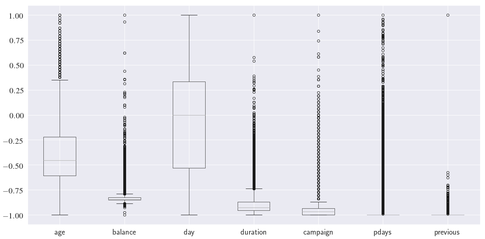
Next, we need to detect the outliers in our dataset and remove them. Here I use IQR (Inter-Quantile Range) outlier detection method.
from scipy.stats import zscore
def remove_outlier_iqr(df_in, col_name, index=None):
q1 = df_in[col_name].quantile(0.25)
q3 = df_in[col_name].quantile(0.75)
iqr = q3 - q1 # Interquartile range
fence_low = q1 - 1.5 * iqr
fence_high = q3 + 1.5 * iqr
outlier_condition = (df_in[col_name]<fence_low) | (df_in[col_name]>fence_high)
df_out = df_in.drop(df_in[outlier_condition].index, axis=0, inplace=False)
return df_out
def remove_outlier_zscore(df_in, col_name, index=None):
df_in['zscores'] = zscore(df_in[col_name])
fence_low = -3
fence_high = 3
outlier_condition = (df_in['zscores']<fence_low) | (df_in['zscores']<fence_high)
df_out = df_in.drop(df_in[outlier_condition].index, axis=0, inplace=False)
return df_out.drop('zscores', axis=1)
for col in df.loc[:, df.dtypes=='int'].columns:
print(f'Number of IQR-based outliers in column {col} is {len(df) - len(remove_outlier_iqr(df, col))}')
Number of IQR-based outliers in column age is 487 Number of IQR-based outliers in column balance is 4729 Number of IQR-based outliers in column day is 0 Number of IQR-based outliers in column duration is 3235 Number of IQR-based outliers in column campaign is 3064 Number of IQR-based outliers in column pdays is 8257 Number of IQR-based outliers in column previous is 8257
for col in df.loc[:, df.dtypes=='int'].columns:
print(f'Number of Z-score-based outliers in column {col} is {len(df) - len(remove_outlier_zscore(df, col))}')
Number of Z-score-based outliers in column age is 381 Number of Z-score-based outliers in column balance is 745 Number of Z-score-based outliers in column day is 0 Number of Z-score-based outliers in column duration is 963 Number of Z-score-based outliers in column campaign is 840 Number of Z-score-based outliers in column pdays is 1723 Number of Z-score-based outliers in column previous is 582
Notice that there is a huge difference in the number of outliers depending on the method we choose! One issue with $Z_{score}$ is that because it identifies the outliers using the mean and standard deviation of the population, it is biased to the existing outliers! In other words, the outliers of the population (before removal) affect the mean and standard deviation of the population, therefore, they also afffect the outlier detection thresholds ($-3\leq Z_{score} \leq 3$). IQR-based outlier detection does not suffer this issue as it is based on the median of the population.
To drop or not to drop (the outliers!)?
Often times outliers indicate a mistake in data collection. They increase the variation in our data which reduces the statistical power. Excluding outliers can therefore make our results statistically more significant. We usually:
- Drop the outliers if we know that they denotes a wrong measurement, e.g., a negative age
- Drop the outliers if we have a lot of data, so that dropping a questionable outlier won’t hurt the sample.
- Do not drop the outliers if there are a lot of them! Outliers are rare by definition!
It is also very important to think about the context of the feature and the way the features are reported (as numbers). For instance, pdays represents the number of days that passed by after the client was last contacted from a previous campaign. The clients who have never been contacted before are denoted with $-1$.
print('The number of clients that have never been contacted before is {0:d}'.format(len(df[df['pdays']==-1])))
print('Column pdays has a minimum value {0:d}'.format(df['pdays'].min()))
The number of clients that have never been contacted before is 36954 Column pdays has a minimum value -1
Note that most of the clients (36954 out of 45211) have never been contacted before. Also, $-1$ is the smallest value that the column pdays takes. This means all the datapoints for the feature pdays that are denoted as outliers in the above boxplot are totally fine. In other words, the number $-1$ does not actually quantify the number of days but simply is used as a symbol to denote the clients that were not contacted.
Finally, we will also check to make sure that there are no outliers that contradict our common sense, for example, a negative call duration or a negative age:
df.describe()
| age | balance | day | duration | campaign | pdays | previous | zscores | |
|---|---|---|---|---|---|---|---|---|
| count | 45211.00 | 45211.00 | 45211.00 | 45211.00 | 45211.00 | 45211.00 | 45211.00 | 45211.00 |
| mean | 40.94 | 1362.27 | 15.81 | 258.16 | 2.76 | 40.20 | 0.58 | 0.00 |
| std | 10.62 | 3044.77 | 8.32 | 257.53 | 3.10 | 100.13 | 2.30 | 1.00 |
| min | 18.00 | -8019.00 | 1.00 | 0.00 | 1.00 | -1.00 | 0.00 | -0.25 |
| 25% | 33.00 | 72.00 | 8.00 | 103.00 | 1.00 | -1.00 | 0.00 | -0.25 |
| 50% | 39.00 | 448.00 | 16.00 | 180.00 | 2.00 | -1.00 | 0.00 | -0.25 |
| 75% | 48.00 | 1428.00 | 21.00 | 319.00 | 3.00 | -1.00 | 0.00 | -0.25 |
| max | 95.00 | 102127.00 | 31.00 | 4918.00 | 63.00 | 871.00 | 275.00 | 119.14 |
Data transformations
We convert the outcome column y from ('yes','no') to (0,1) for convenience.
df['y_num'] = df['y'].map({'yes':1, 'no':0})
# Sanity check
df[['y', 'y_num']].head()
| y | y_num | |
|---|---|---|
| 0 | no | 0 |
| 1 | no | 0 |
| 2 | no | 0 |
| 3 | no | 0 |
| 4 | no | 0 |
Next, we transform the month values to numbers.
from datetime import datetime as dt
months = list(df['month'].unique())
month_numbers = [dt.strptime(i, "%b").month for i in months]
month_dict = dict(zip(months, month_numbers))
df['month_num'] = df['month'].map(month_dict)
# Sanity check
df[['month', 'month_num']].head()
| month | month_num | |
|---|---|---|
| 0 | may | 5 |
| 1 | may | 5 |
| 2 | may | 5 |
| 3 | may | 5 |
| 4 | may | 5 |
Dates are specified with a month name and a day number, however, it would be beneficial to know the weekday as well ('Monday', 'Tuesday', etc.) as it may influence the client responses to the telemarketing campaign. Since we know that the data is ordered by date, from May 2008 to Novermber 2010, we can find a way to convert the dates to weekdays. I took the following approach to achieve this:
- find the dataframe index corresponding to the last day of december for every year
- create a year column using the indices found in previous step
- use
datetime.strftimeto convert the data to weekday
df_month_tmp = df.copy()
end_year_ids = []
last_index = df_month_tmp.index.max()
year = 2008
min_id = 0
month_list = ['jan', 'feb', 'mar', 'apr', 'may', 'jun',
'jul', 'aug', 'sep', 'oct', 'nov', 'dec']
# initialize the year column
df['year'] = 0
# do this for 2008 and 2009 (because we know where 2010 ends)
while year<2010:
# find the minimum index for the last month of the current year
j = -1 # index of the last month in the month_list
while pd.isnull(df_month_tmp[df_month_tmp['month']==month_list[j]].index.min()):
j += -1
last_month_id = df_month_tmp[df_month_tmp['month']==month_list[j]].index.min()
# add to the index until the month is not 'dec'
while df['month'].iloc[last_month_id] == month_list[j]:
last_month_id += 1
# last_month_id now holds the index to the first day in the following year
# set the 'year' column for the row in (min_id, last_month_id) range to year
df['year'].iloc[min_id: last_month_id]=year
# next year
year += 1
# drop the rows that the value of 'year' is assigned
df_month_tmp.drop(np.arange(min_id, last_month_id), axis=0, inplace=True)
# set min_id to the first row of the new df_month_tmp
min_id = last_month_id
# min_id now denotes the first day in 2010
df['year'].iloc[min_id:]=year
df['year'] = df['year'].astype('str')
# Combine 'year','month_num','day' and create a 'date' column
df['date'] = df[['year','month_num','day']].apply(
lambda row: dt.strptime(
'-'.join(row.values.astype(str)),
'%Y-%m-%d'
), axis=1
)
# Obtain 'weekday' from 'date' using datetime.strftime
df['weekday'] = df['date'].apply(lambda date: dt.strftime(date, '%A'))
df['weekday'].head()
0 Monday 1 Monday 2 Monday 3 Monday 4 Monday Name: weekday, dtype: object
# Sanity check
len(df[(df['weekday']=='Saturday') | (df['weekday']=='Sunday')])
50
It seems that the date-to-weekday conversion was succussful as there are only 50 out of 45211 entries that are labeled 'Saturday' or 'Sunday' (non business days). We eliminate those rows from out data because they are suspicious.
df.drop(df[(df['weekday']=='Saturday') | (df['weekday']=='Sunday')].index,
axis=0, inplace=True)
It would be more useful to investigate the impact of age for different age groups rather than a continuous variable. We define a new column that categorizes age into 6 different groups.
df['age-groups'] = pd.qcut(df['age'], q=6)
Finally, we will divide our clients into new and old groups using the value of pdays.
df['oldOrNew'] = df['pdays'].apply(lambda x: 'old' if x!=-1 else 'new')
df.head()
| age | job | marital | education | default | balance | housing | loan | contact | day | ... | poutcome | y | zscores | y_num | month_num | year | date | weekday | age-groups | oldOrNew | |
|---|---|---|---|---|---|---|---|---|---|---|---|---|---|---|---|---|---|---|---|---|---|
| 0 | 58 | management | married | tertiary | no | 2143 | yes | no | other | 5 | ... | other | no | -0.25 | 0 | 5 | 2008 | 2008-05-05 | Monday | (52.0, 95.0] | new |
| 1 | 44 | technician | single | secondary | no | 29 | yes | no | other | 5 | ... | other | no | -0.25 | 0 | 5 | 2008 | 2008-05-05 | Monday | (39.0, 45.0] | new |
| 2 | 33 | entrepreneur | married | secondary | no | 2 | yes | yes | other | 5 | ... | other | no | -0.25 | 0 | 5 | 2008 | 2008-05-05 | Monday | (31.0, 35.0] | new |
| 3 | 47 | blue-collar | married | other | no | 1506 | yes | no | other | 5 | ... | other | no | -0.25 | 0 | 5 | 2008 | 2008-05-05 | Monday | (45.0, 52.0] | new |
| 4 | 33 | other | single | other | no | 1 | no | no | other | 5 | ... | other | no | -0.25 | 0 | 5 | 2008 | 2008-05-05 | Monday | (31.0, 35.0] | new |
5 rows × 25 columns
Exploratory Data Analysis
Exploratory data analysis is one of the most essential and critical steps before performing any sort of data analysis. Investigating the data prior to analysis helps us discover common patterns among the features, detect anomalies, and gain insights about the potential correlations between the features and the outcome.
Feature Importance and Correlation Plot
We start by looking at the correlations between the numerical variables. We also use sklearn.feature_selection's SelectKBest. SelectKBest allows you to use feature importance as a feature selection method. This can help us with the feature selection process to eliminate the highly correlated features and drop the uncorrelated features.
from sklearn.feature_selection import SelectKBest
from sklearn.feature_selection import f_classif
sns.set_style('white')
def get_feature_importance(X, y, feature_names, n_features_to_plot=20):
kbest = SelectKBest(score_func=f_classif, k=n_features_to_plot)
fit = kbest.fit(X, y)
feature_ids_sorted = np.argsort(fit.scores_)[::-1]
features_sorted_by_importance = np.array(feature_names)[feature_ids_sorted]
feature_importance_array = np.vstack((
features_sorted_by_importance[:n_features_to_plot],
np.array(sorted(fit.scores_)[::-1][:n_features_to_plot])
)).T
feature_importance_data = pd.DataFrame(feature_importance_array, columns=['feature', 'score'])
feature_importance_data['score'] = feature_importance_data['score'].astype(float)
return feature_importance_data
fig, (ax1, ax2) = plt.subplots(1, 2, figsize=(13, 4), dpi=130)
corr = df[['age','balance','duration','campaign','month_num','day','pdays','previous','y_num']].corr()
sns.set(font_scale=1.5)
sns.despine()
sns.heatmap(corr, cmap="YlGnBu", ax=ax1)
ax1.set_title('Correlation plot for the numerical features', y=1.05)
data = get_feature_importance(X_num, y, feature_names=numerical_features, n_features_to_plot=7)
data.plot.barh(x='feature', y='score', ax=ax2, colormap='Set3')
ax2.set_xlabel('feature score')
ax2.set_ylabel('')
ax2.set_title('Numerical features importance scores', y=1.05)
ax2.get_legend().remove()
plt.subplots_adjust(wspace=0.5)
plt.grid(None)
plt.show()
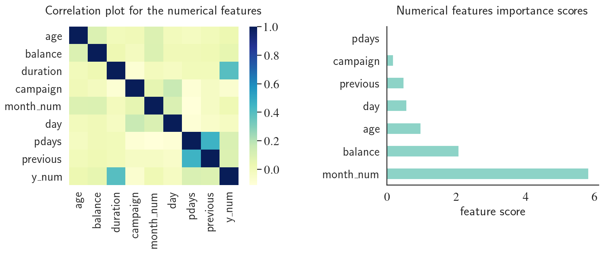
Next, we use some of Seaborn's nice plotting functions, we take a look at the distributions of job and balance.
sns.set_style('white')
fig, axes = plt.subplots(1, 2, figsize=(16, 6), dpi=80)
sns.set(font_scale=1.5)
sns.despine()
sns.distplot(df["age"], color="teal", ax=axes[0])
axes[0].set_title("age distribution")
sns.distplot(df["balance"], color="red", ax=axes[1])
axes[1].set_title("balance distribution")
plt.show()
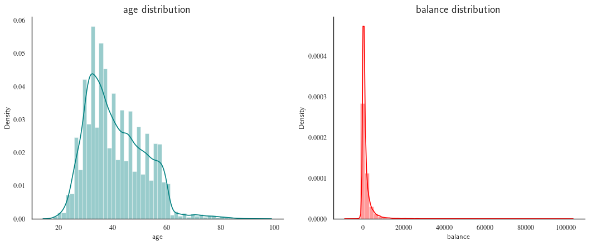
fig, axes = plt.subplots(1, 3, figsize=(16, 6), dpi=80, sharey=True)
sns.set(font_scale=1.5)
sns.set_style('white')
ax = fig.gca()
sns.despine(bottom=not ax.is_last_row(), left=not ax.is_first_col())
sns.distplot(remove_outlier_iqr(df, 'balance')['balance'], bins=50,
color="red", ax=axes[0], label=r'$IQR$ outlier removal')
axes[0].spines['left'].set_visible(True)
sns.distplot(remove_outlier_zscore(df, 'balance')['balance'], bins=50,
color="teal", ax=axes[1], label=r'$Z_{score}$ outlier removal')
sns.distplot(df['balance'], color="orange", ax=axes[2], label='raw data',bins=50)
leg = fig.legend()
leg.set_bbox_to_anchor([0.85, 0.9])
plt.suptitle('Distribution of balance before and after outlier removal')
plt.show()
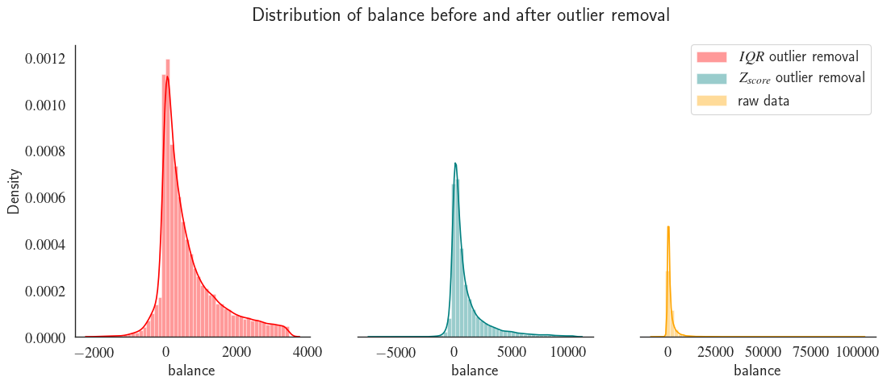
Notice how outlier removal leads to data normalisation. The high number of removed outliers is due to the high standard deviation to mean ratio the long tail of the raw population (figure on the right). This means that there is a very high variation in customers' balance. The deviation from normal distribution can be characterized using skewness which can be quntified using the mean ($\bar{x}$), median ($\tilde{x}$) and standard deviation ($\sigma$) of a population. To assess the skewness of each feature in our example we can use Pearson’s second coefficient of skewness:
$$ \mathrm{Sk}=\frac{3(\bar{x}-\tilde{x})}{\sigma} $$
for col in df.loc[:, df.dtypes=='int'].columns:
mean = df.describe()[col].loc['mean']
med = df.describe()[col].loc['50%']
std = df.describe()[col].loc['std']
sk = 3*(mean-med)/std
if sk > 0.05:
print(" {0:s} is Right-skewed with Sk={1:.2f}".format(col,sk))
elif sk < -0.05:
print(" {0:s} is Left-skewed with Sk={1:.2f}".format(col,sk))
else:
print(" {0:s} is symmetric with Sk={1:.2f}".format(col,sk))
age is Right-skewed with Sk=0.55 balance is Right-skewed with Sk=0.90 day is Left-skewed with Sk=-0.07 duration is Right-skewed with Sk=0.91 campaign is Right-skewed with Sk=0.74 pdays is Right-skewed with Sk=1.24 previous is Right-skewed with Sk=0.76 y_num is Right-skewed with Sk=1.09 month_num is Right-skewed with Sk=0.18
Seaborn library provides catplot() function which helps visualize the correlations between multiple features in one plot.
def custom_barplot(data, xcol, class_, ycol=None, title="", rot=0, leg_x=1,
bar_scale=1, show_success_rate=True,
rot_success_rate=0, width=15, height=5, return_ax=False, **kwargs):
if ycol is not None:
newplot = sns.catplot(x=xcol, y=ycol, hue=class_, kind="bar", data=data,
legend=True, **kwargs)
else:
newplot = sns.catplot(x=xcol, hue=class_, kind="count", data=data,
legend=True, **kwargs)
newplot.fig.set_size_inches(width, height)
def change_width(ax, scale, labels=None) :
num_patches = len(ax.patches)
for i, patch in enumerate(ax.patches) :
current_width = patch.get_width()
new_width = scale*current_width
diff = current_width - new_width
# we change the bar width
patch.set_width(new_width)
# we recenter the bar
if (ax.lines is not None) and (ycol is not None):
if i*2<len(ax.patches):
ax.lines[i].set_xdata(ax.lines[i].get_xdata() + 0.5*diff)
patch.set_x(patch.get_x() + diff)
else:
ax.lines[i].set_xdata(ax.lines[i].get_xdata() - 0.5*diff)
else:
if i*2<len(ax.patches):
patch.set_x(patch.get_x() + diff)
if (labels is not None) and (i*2>len(ax.patches)-1):
j = i - len(ax.patches)//2
if ycol is not None:
height = ax.get_ylim()[1]*0.02
else:
height = patch.get_height()
w = patch.get_width()
x0 = patch.get_x()
if rot_success_rate==0:
fontSize = int(14*width/15)
else:
fontSize = 16
ax.annotate("{0:0.2f}\%".format(labels[j]), xy=(x0 + w/2, height), ha='center',
xytext=(0, 0), va='bottom', fontsize=fontSize,
textcoords="offset points", rotation=rot_success_rate);
ax = newplot.fig.axes[0]
xticklabels = ax.get_xticklabels()
yticklabels = ax.get_yticklabels()
ax.set_xticklabels(xticklabels, fontsize=16, rotation=rot,
horizontalalignment={0: 'center', 45: 'right', 90: 'center'}.get(rot))
ax.set_yticklabels(yticklabels, fontsize=16)
ax.set_xlabel(xcol, fontsize=22)
ax.set_ylabel(ax.get_ylabel(), fontsize=22)
if show_success_rate:
success = 100 * data[data[class_]=='yes'].groupby(xcol)[class_].count() \
/ (data[data[class_]=='no'].groupby(xcol)[class_].count() \
+ data[data[class_]=='yes'].groupby(xcol)[class_].count())
success_dict = dict(zip(success.index, success.values))
num_bars = len(list(xticklabels))
xticklabelsStrings = [list(xticklabels)[i].get_text() for i in range(num_bars)]
barLabels = [success_dict.get(label) for label in xticklabelsStrings]
change_width(ax, bar_scale, barLabels)
else:
change_width(ax, bar_scale)
leg = newplot._legend
leg.set_visible(False)
ax.legend(bbox_to_anchor=(leg_x,1), title=class_,
loc="lower right", fontsize=16)
newplot.fig.suptitle(title, fontsize=32)
if return_ax:
ax.remove()
return newplot.fig, ax
Education Correlation with the Success Rate of the Telemarketing Campaign
I slightly modified the catplot() function to report the success rate in addition to other information. I defined the success rate as
The barplot below shows the distribution of telemarketing campaign among people with different education levels. The distributions shows that most of the telemarketing campaign target population have medium level of education and suggest that the telemarketing campaign is more successful in people with high level of education.
custom_barplot(df, xcol='education', class_='y', rot=0, palette='Set1');
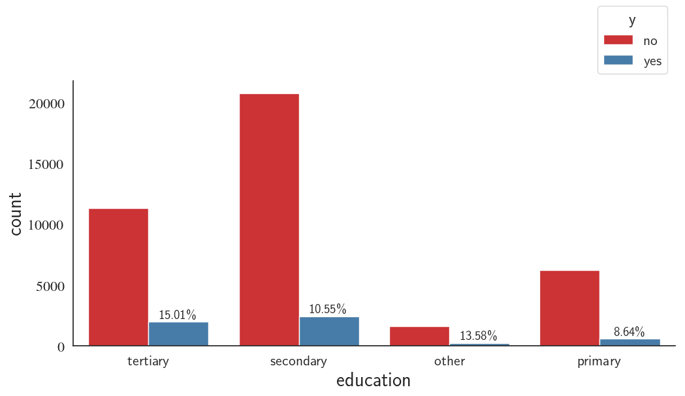
Education, Call Duration, and Outcome
The average call duration does not vary much for different education levels for both successful and unsuccessful campaigns
custom_barplot(df, xcol='education', class_='y', ycol='duration', palette='Set2', bar_scale=0.8);
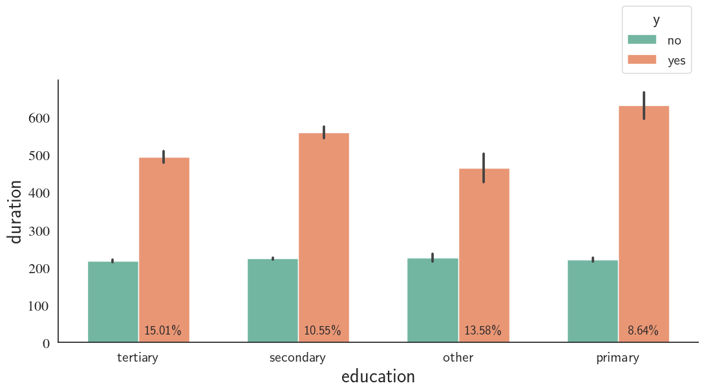
Job, Call duration, and Outcome
custom_barplot(df, xcol='job', class_='y', ycol='duration', rot=45, rot_success_rate=90,palette='Set3');
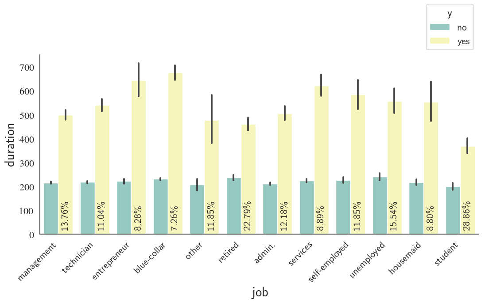
Students, followed by retired people are the best group of people to invest for bank telemarketing campaign according to the barplot above. In contrast, blue-collar and entrepreneur careers demonstrate the least success in this regard.
Housing Loan, Credit Loan, Age, and Outcome
fig1, ax1 = custom_barplot(df, xcol='housing', class_='y', ycol='age', height=4, width=12,bar_scale=0.4,
rot=0, rot_success_rate=90, palette="Spectral", return_ax=True, leg_x=1.3);
fig2, ax2 = custom_barplot(df, xcol='loan', class_='y', ycol='age',height=4, width=12,bar_scale=0.4,
rot=0, rot_success_rate=90, palette="Spectral", return_ax=True);
fig3 = plt.figure()
for ax, fig, ax_loc, shift_ax_x, legend_visibility, x_lab in zip([ax1,ax2],
[fig1,fig2],
['121','122'],
[0,0.1],
[True,False],
['housing loan','credit loan']):
ax.figure=fig3
dummy = fig3.add_subplot(ax_loc)
x0,y0,x1,y1 = [dummy.get_position().x0, dummy.get_position().y0, \
dummy.get_position().x1, dummy.get_position().y1]
fig3.add_axes(ax)
ax.set_position([x0+shift_ax_x, y0+0.1, x1-x0, y1-y0])
if not legend_visibility:
leg = ax.legend().set_visible(legend_visibility)
ax.set_xlabel(x_lab, fontsize=20)
dummy.remove()
plt.close(fig)
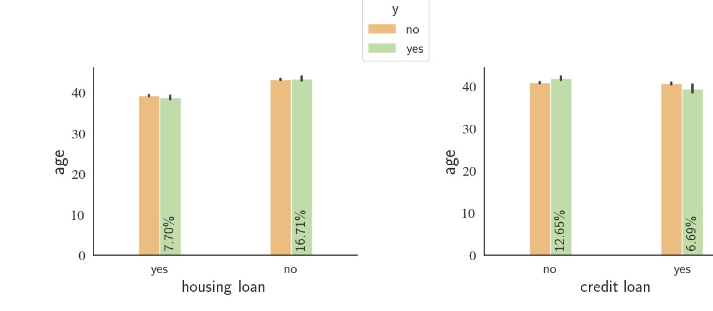
We notice that the clients who have'nt received loans are roughly two times ($\frac{12.66}{6.68}\approx\frac{16.7}{7.7}\approx2$) more likely to say 'no' to the telemarketing campaign compared to the people who have received housing or credit loans.
New vs. Old Customers, Call Duration, Contact Type, and Success Rate
We can compare the success rate between the new (pdays=-1) and old clients (pdays>-1). We will also see whether or not the contact type (cellular vs. telephone) has any influence on the success rate. Finally, how does the call duration compare for the two groups (new vs. old clients)?
fig1, ax1 = custom_barplot(df[(df['oldOrNew']=='new') & (df['contact']!='other')], xcol='contact', class_='y',
ycol='duration', height=4, width=9, bar_scale=0.7,
rot=0, rot_success_rate=90, palette="Pastel1",
return_ax=True, leg_x=1.5);
fig2, ax2 = custom_barplot(df[(df['oldOrNew']=='old') & (df['contact']!='other')], xcol='contact', class_='y',
ycol='duration', height=4, width=9, bar_scale=0.7,
rot=0, rot_success_rate=90, palette="Pastel1",
return_ax=True);
fig3 = plt.figure()
for ax, fig, ax_loc, shift_ax_x, legend_visibility, title in zip(
[ax1,ax2],
[fig1,fig2],
['121','122'],
[0,0.2],
[True,False],
['New Clients','Old Clients']):
ax.figure=fig3
dummy = fig3.add_subplot(ax_loc)
x0,y0,x1,y1 = [dummy.get_position().x0, dummy.get_position().y0, \
dummy.get_position().x1, dummy.get_position().y1]
fig3.add_axes(ax)
ax.set_position([x0+shift_ax_x, y0+0.05, x1-x0, y1-y0])
if not legend_visibility:
leg = ax.legend().set_visible(legend_visibility)
ax.set_title(title, fontsize=30)
dummy.remove()
plt.close(fig)<
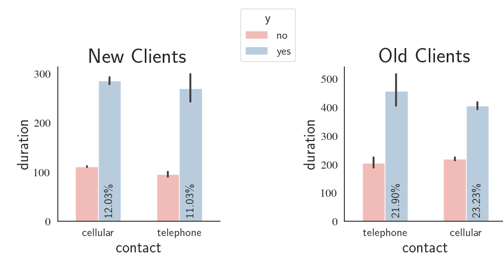
What we see in the graphs is that the old clients are approximately two times more likely to open a term deposit when compared with the new clients. As one would intuitively expect, the contact type has no influenece on the decision made by the clients. violinplot() is a nice ways to analyze the distribution of a continuous variable for different class distributions. First, we are interested to see if weekday has any influence on the success rate and call duration.
custom_barplot(df, xcol='weekday', class_='y', ycol='duration',
bar_scale=0.6, rot_success_rate=90, palette='Set3');
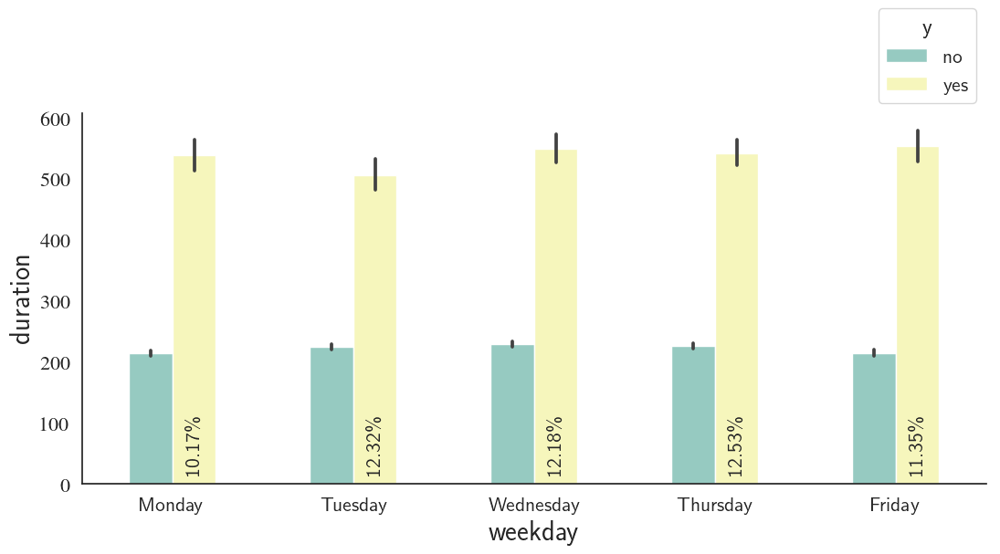
Thursdays and Mondays show the highest and lowest success rates, respectively; however, there's not a significant difference between the weekdays in this regard.
Next, using violinplot(), we're going to take a look at the balance distribution at every weekday for different campaign success (yes/no) distributions. Before that,
sns.set(font_scale=2)
sns.set_style('white')
g = sns.catplot(data=df, x="weekday", y="balance", hue="y", scale='count', kind="violin",
split=True, legend_out=True, height=8, aspect=2, cut=0,
order=['Monday', 'Tuesday', 'Wednesday', 'Thursday', 'Friday']);
g.set(ylim=(-5000, 10000));

Similar to duration, balance does not seem to be correlated with the weekday that the campaign call has been made. Note that I have changed the ylim range to have a better look. Next, I take a similar approach as what I did for weekdays to investigate the relationship between balance, month, and success rate.
sns.set(font_scale=2)
sns.set_style('white')
g = sns.catplot(data=df, x="month", y="balance", hue="y", scale='count', kind="violin",
split=True, legend_out=True, height=8, aspect=2, cut=0, palette='hls',
order=['jan','feb','mar','apr','may','jun','jul','aug','sep','oct','nov','dec']);
g.set(ylim=(-5000, 15000));
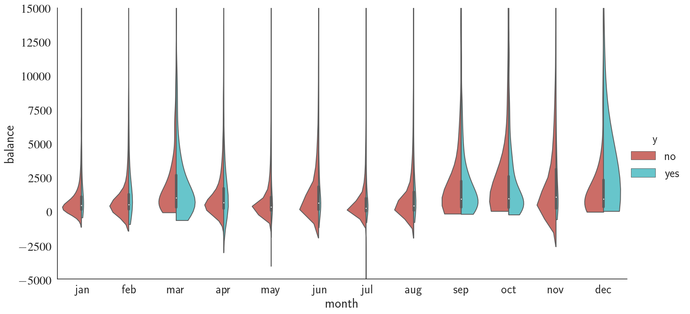
Interestingly, we notice that during 'march', 'september', 'october', and 'december', telemarketing campaign has been significantly more successful compared to the rest of the months.
g = sns.catplot(x="oldOrNew", y="balance",
hue="y", col="year", scale='count',
data=df, kind="violin", split=True,
height=4, aspect=1);
g.set(ylim=(-5000, 15000));
g.set(xlabel='')
plt.suptitle('balance distribution for new and old clients from 2008-2010', y=1.1);
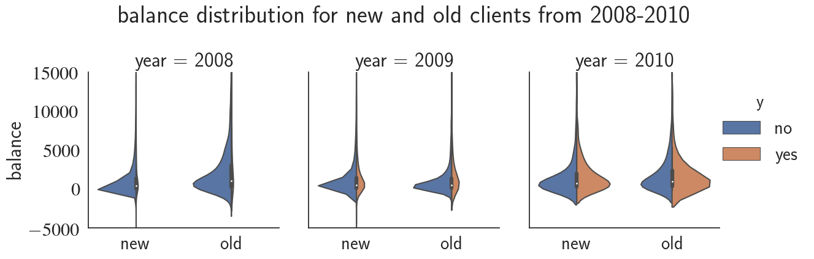
Notice how the telemarketing success rate increases from 2008 to 2010! We can see the evolution of success rate over time with a finer resolution by plotting it for every month.
# Combining 'year' and 'month_num' to see the trend over the entire months
df['yearMonth'] = df[['year', 'month_num']].apply(
lambda row: '-'.join(row.values.astype(str)),
axis=1)
custom_barplot(df, xcol='yearMonth', class_='y', rot=45,
width=25, bar_scale=1.3, rot_success_rate=90, palette='RdPu');
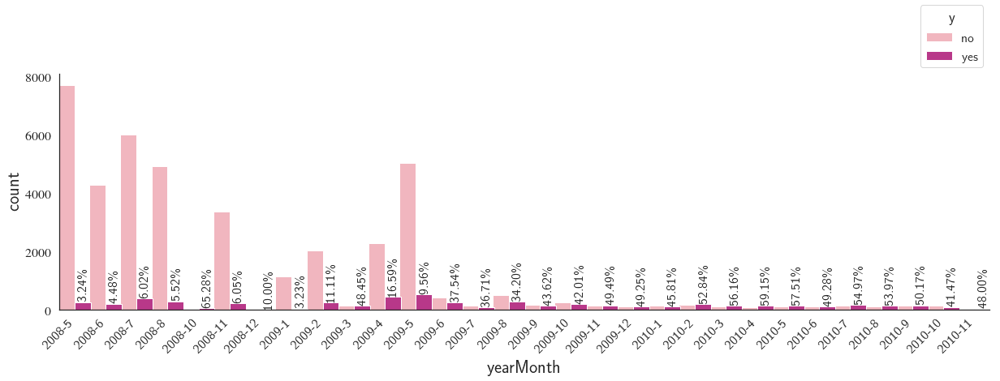
We notice that there is a big overall drop in the number of contacts made as we go forward in time.
g = sns.catplot(x="age-groups", hue="y", col="oldOrNew", palette='gist_rainbow',
data=df, kind="count", height=8, aspect=1.5);
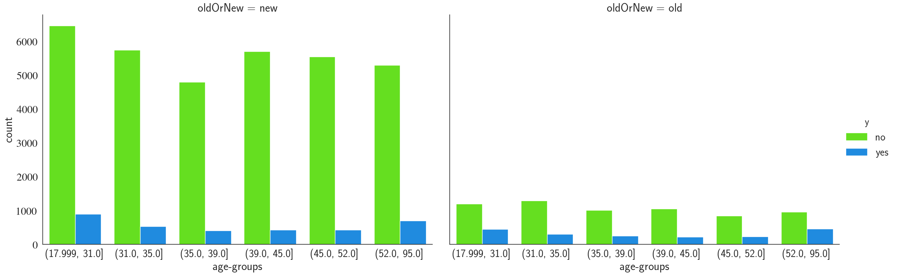
We notice that the contacts made have a uniform distribution over different age-groups and the youngest and oldest groups ((18-31) and (52-95)) have a higher term-deposit conversion rate. Finally, the old clients (clients that have been contacted before) are more likely to open a term-deposit, which is something we had already seen previously.
Marital Status
custom_barplot(df, xcol='marital', class_='y', ycol='balance',
bar_scale=0.3, rot_success_rate=90, palette='Set3');
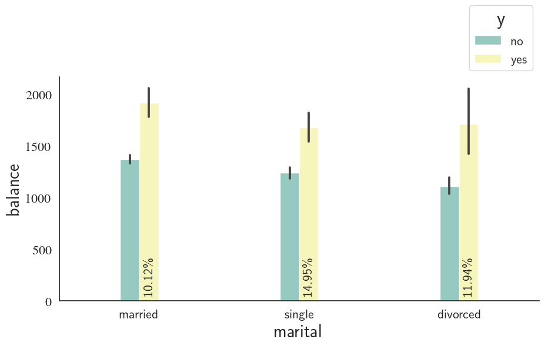
Marital Status, Poutcome, and Default
fig, axes = plt.subplots(1,3,frameon=False, figsize=(12,6))
plt.tight_layout()
plt.subplots_adjust(wspace=.5 , hspace=.3)
g0 = sns.countplot(x='marital', hue='y', data=df, ax=axes[0], palette='jet_r')
g0.legend().remove()
g0.set_ylim([0, 50000])
g0.spines['right'].set_visible(False)
g0.spines['top'].set_visible(False)
g1 = sns.countplot(x='default', hue='y', data=df, ax=axes[1], palette='jet_r')
g1.legend().remove()
g1.set_ylim([0, 50000])
g1.spines['right'].set_visible(False)
g1.spines['top'].set_visible(False)
g2 = sns.countplot(x='poutcome', hue='y', data=df, ax=axes[2], palette='jet_r')
g2.legend(bbox_to_anchor=(1, 1), title='y', loc="upper left", fontsize=16)
g2.set_ylim([0, 50000])
g2.spines['right'].set_visible(False)
g2.spines['top'].set_visible(False)
plt.show()
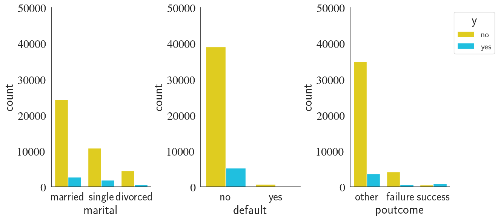
Summary of the Findings Using EDA
- By visualy inspecting the vriation of features/response with respect to other features, we are now more confident about the importance of different features for a task of telemarketing success prediction
- Job is an important feature to determine the response as some careers (e.g. students with 28.86% success rate) were shown to be much more responsive than others (e.g. blue-collar with 7.26% success rate)
- Year+Month was one of the most important features as it really impacted the outcome of the telemarketing campaign. For instance, compare 2008-10 with 65.28% success rate with 2009-1 with only 3.23%.
- pdays which can denote whether or not the client has been contacted before was important as well since old clients (the ones that had been contacted previously) were twice more likely to open a term-deposit compared to the new clients.
- Certain age groups are more anticipated to make a term-deposit, e.g. 18-31 and 52-95 age groups.
- Not having received credit or housing loan increases the chance of subscribing to the term-deposit campaign by roughly a factor of two.
- Features such as campaign, default, weekday, contact, and marital do not seem to affect the outcome so we will drop them from the features
- Because there is a certain group ('success') in poutcome that has a significantly higher success rate compared with the other two ('other' and 'failure'), we include poutcome in the features
Important note: duration attribute highly affects the output target (e.g., if duration=0 then y='no' meaning that the telemarketing campaign was most likely unsuccessful). Yet, the duration is not known before a call is performed. Also, after the end of the call y is obviously known. We will only include this feature for benchmark purposes and will discard it since our goal is to build a realistic predictive model.
A Classification Model to Predict Telemarketing Campaign Success Rate
One of the goals of this project is to figure out whether we can design accurate models to predict the outcome of the telemarketing campaign. First, we will only use the relevant and important features which we obtained using explanatory data analysis. Then, we assess whether adding more features will lead to a more accurate model or not.
Data Preparation
Encoding the categorical features
Some machine learning models require all input and output variables to be numeric. There are multiple aproaches to convert categorical variables into numerics such as Ordinal Encoding, One-Hot Encoding, and Dummy Varibale Encoding. For machine-learning applications, it's almost always safer to handle categorical data using One-Hot encoding. We use sklearn's OneHotEncoder in this project.
from sklearn.preprocessing import OneHotEncoder, LabelEncoder, StandardScaler
from sklearn.model_selection import train_test_split
# encode the input data
def prepare_features(X_train, X_test, numerical_col_ids=None):
# Set "handle_unknown" argument to "ignore". This is useful in case the model encounters a
# new feature level. Foe example, you train a model with unique colors "blue", "purple",
# and "yellow", and there is a color "red" appearing in the test data.
mask = np.ones(X_train.shape[1], dtype=bool)
if numerical_col_ids is not None:
if isinstance(numerical_col_ids, int):
numerical_feature_count = 1
else:
numerical_feature_count = len(numerical_col_ids)
mask[numerical_col_ids] = False
X_train_num = X_train[:, ~mask].reshape(-1, numerical_feature_count)
X_test_num = X_test[:, ~mask].reshape(-1, numerical_feature_count)
X_train_cat = X_train[:, mask]
X_test_cat = X_test[:, mask]
oh_encoder = OneHotEncoder(handle_unknown="ignore")
oh_encoder.fit(X_train_cat)
X_train_cat_enc = oh_encoder.transform(X_train_cat).toarray()
X_test_cat_enc = oh_encoder.transform(X_test_cat).toarray()
X_test_enc = np.hstack([X_test_cat_enc, X_test_num])
X_train_enc = np.hstack([X_train_cat_enc, X_train_num])
return X_train_enc, X_test_enc
Dropping the irrelevant features
We only keep the features that were shown to have impact on the outcome.
df_simple = df.copy()
# Drop the irrelevant columns
df_simple.drop(['zscores', 'month_num', 'date', 'month','previous','campaign',
'year', 'duration', 'pdays','marital','default','contact',
'age-groups', 'y', 'day'], axis=1, inplace=True)
df_simple.columns
Index(['age', 'job', 'education', 'balance', 'housing', 'loan', 'poutcome',
'y_num', 'weekday', 'oldOrNew', 'yearMonth'],
dtype='object')
Note:
Instead of keeping both year and month, we continue with yearMonth.
Creating features and outcome arrays
# Specify numerical and categorical features
numerical_features = [x for x in df_simple.columns if (df_simple[x].dtypes=='int64' and x!='y_num')]
categorical_features = [x for x in df_simple.columns if df_simple[x].dtypes=='O']
X_cat = df_simple[categorical_features].values # categorical features
X_num = df_simple[numerical_features].values # numerical features
X = np.hstack([X_cat, X_num]) # feature matrix
y = df_simple['y_num'].values.reshape(-1,1)
The One-Hot encoded features can be obtained using get_feature_names method of the encoder:
oh_encoder_all = OneHotEncoder()
oh_encoder_all.fit(df_simple[categorical_features].values)
# encode categorical features
encoded_features = list(oh_encoder_all.get_feature_names(categorical_features))
# append numerical features
encoded_features.extend(numerical_features)
print(encoded_features[:5])
['job_admin.', 'job_blue-collar', 'job_entrepreneur', 'job_housemaid', 'job_management']
Splitting the dataset to training (70%) and test data (30%)
print(f'The feature vector prior to one-hot encoding has {X.shape[1]} features including {X_num.shape[1]} numerical and {X_cat.shape[1]} categorical features')
The feature vector prior to one-hot encoding has 10 features including 2 numerical and 8 categorical features
# X_train_, X_test_ to denote pre encoding
X_tr_, X_tst_, y_tr, y_tst = train_test_split(X, y, test_size=0.3, random_state=123)
# 'balance' is the 8-th column (col_id=7) in the feature matrix prior to encoding
X_tr, X_tst = prepare_features(X_tr_, X_tst_, 7)
X = np.vstack([X_tr, X_tst])
y = np.vstack([y_tr, y_tst])
print(f'The feature vector after one-hot encoding has {X_tr.shape[1]} features')
The feature vector after one-hot encoding has 59 features
print(f'The feature vector prior to one-hot encoding has {X.shape[1]} features including {X_num.shape[1]} numerical and {X_cat.shape[1]} categorical features')# X_train_, X_test_ to denote pre encoding
X_tr_, X_tst_, y_tr, y_tst = train_test_split(X, y, test_size=0.3, random_state=123)
# 'balance' is the 8-th column (col_id=7) in the feature matrix prior to encoding
X_tr, X_tst = prepare_features(X_tr_, X_tst_, 7)
X = np.vstack([X_tr, X_tst])
y = np.vstack([y_tr, y_tst])
print(f'The feature vector after one-hot encoding has {X_tr.shape[1]} features')
We will wait until we finish our modeling to look at the test set (X_tst).
Choosing a Model
from sklearn.linear_model import LogisticRegression
from sklearn.neighbors import KNeighborsClassifier
from sklearn.tree import DecisionTreeClassifier
from sklearn.naive_bayes import GaussianNB
from sklearn.svm import SVC
from sklearn.ensemble import RandomForestClassifier
Choosing Performance Metrics
from sklearn.model_selection import cross_val_score
from sklearn.model_selection import KFold
from sklearn.model_selection import ShuffleSplit
from sklearn.model_selection import StratifiedKFold
from sklearn.model_selection import StratifiedShuffleSplit
from sklearn.model_selection import RepeatedStratifiedKFold
from sklearn.metrics import accuracy_score
from sklearn.metrics import classification_report
from sklearn.metrics import confusion_matrix
from sklearn.metrics import ConfusionMatrixDisplay
Training the baseline models
import time
model_dict = {}
model_dict['LR'] = [LogisticRegression()]
model_dict['KNN'] = [KNeighborsClassifier()]
model_dict['CT'] = [DecisionTreeClassifier()]
model_dict['NB'] = [GaussianNB()]
model_dict['SVC'] = [SVC()]
model_dict['RF'] = [RandomForestClassifier()]
# specify the number of splits
cv = ShuffleSplit(n_splits=10, random_state=123)
for model_name, model in model_dict.items():
# train the model
t_start = time.time()
cv_results = cross_val_score(model[0], X_tr, y_tr, cv=cv, scoring='accuracy')
# save the results
calc_time = time.time() - t_start
model_dict[model_name].append(cv_results)
model_dict[model_name].append(calc_time)
print(("{0} model gives an average accuracy of {1:.2f}% with a standard deviation "
"{2:.2f} (took {3:.1f} seconds)").format(model_name,
100*cv_results.mean(),
100*cv_results.std(),
calc_time))
LR model gives an average accuracy of 89.14% with a standard deviation 0.44 (took 6.8 seconds) KNN model gives an average accuracy of 87.56% with a standard deviation 0.43 (took 5.0 seconds) CT model gives an average accuracy of 83.02% with a standard deviation 0.44 (took 7.0 seconds) NB model gives an average accuracy of 86.46% with a standard deviation 0.56 (took 1.2 seconds) SVC model gives an average accuracy of 88.21% with a standard deviation 0.37 (took 196.5 seconds) RF model gives an average accuracy of 88.70% with a standard deviation 0.36 (took 40.2 seconds)
Logistic regression model achieves the highest accuracy among the classifiers. We chose accuracy as the criteria to evaluate the performance of the classifiers. The dataset, however, is imbalances because the client responses is heavily dominated by the answer no. What usually happens is that a model with a high accuracy is more accurate in predicting the majority class (in this case the "no" class). We can test this by looking at the confusion matrix of the model. Before that, we need to first make predictions on the test data.
from collections import Counter
print(Counter(df['y'].values))
Counter({'no': 39879, 'yes': 5282})
LR = LogisticRegression()
LR.fit(X_tr, y_tr)
y_pred = LR.predict(X_tst)
cm = confusion_matrix(y_tst, y_pred)
fig, ax = plt.subplots(1, 1, dpi=80)
cm_plot = ConfusionMatrixDisplay(confusion_matrix=cm,
display_labels=['no', 'yes'],
)
ax.set_title('Logistic regression consfusion matrix')
cm_plot.plot(ax=ax, cmap='YlGn');
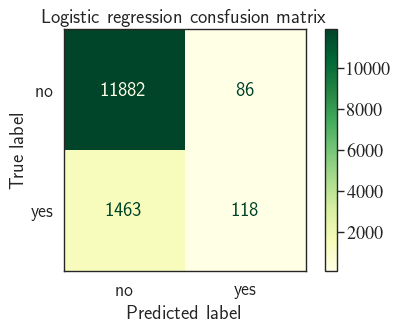
print(classification_report(y_tst, y_pred, digits=3))
precision recall f1-score support
0 0.890 0.993 0.939 11968
1 0.578 0.075 0.132 1581
accuracy 0.886 13549
macro avg 0.734 0.534 0.536 13549
weighted avg 0.854 0.886 0.845 13549
This looks Ok as the accuracy is (roughly) consistent with the CV results (88.6 vs. 89.1). Of 11968 (=11882+86) observations with True label="no", model correctly identified 99.28% ($100\times\frac{11882}{11882+86}$)!
However, the model is nowhere as good in identifying the True "yes" class. From 1581 True "yes" instances, the logistic regression model only managed to correctly identify 118. That's only 7.46% ($100\times\frac{118}{1463+118}$)! In other words, the model is only good in telling the telemarketing campaign which cliens will most likely decline the offer (say "no"). It's not good in correctly predicting the clients that will say "yes".
Because of the imbalance in class distributions, we need to make sure of two things:
- That the samples that we use in cross validation have a class distribution similar to the population.
- That we use a more reasonable metric as the scoring criteria in cross validation.
To address the first issue, one approach is to use sklearn's StratifiedKFold which is generally a better approach when dealing with both bias and variance (towards th majority class). A randomly selected fold might not adequately represent the minority class, particularly in cases where there is a huge class imbalance.
|
Observed class |
||||
|---|---|---|---|---|
|
Positive |
Negative |
|||
|
Predicted |
Positive |
True Positive (TP) | False Positive (FP) | \[\hat{\text{N}}_{+}=\text{TP + FP}\] |
|
Negative |
False Negative (FN) | True Negative (TN) | \[\hat{\text{N}}_{-}=\text{FN + TN}\] | |
| \[\text{N}_{+}=\text{TP + FN}\] | \[\text{N}_{-}=\text{FP + TN}\] | |||
We can use recall or average precision rather than accuracy as the scoring metric. Recall measures the proportion of positive class that have been correctly identified. In other words, the proportion of the clients that responded "yes" to the telemarketing campaign that haven been correctly identified as saying "yes" (here we define the positive class the class where $y$="yes"):
$$ \text{Recall}=\frac{\text{TP}}{\text{TP + FN}} $$Precision can be manifested as the response to the following question: Of all the predictions that are labeled positive ($\hat{\text{N}}_{+}$), what percentage has been predicted correctly (actually belong to the True positive class):
$$ \text{Precision}=\frac{\text{TP}}{\text{TP + FP}} $$You can check here for a rather more comprehensive overview of different classification metrics.
Average precision summarizes a precision-recall (PR) curve as the weighted mean of precisions achieved at each threshold, with the increase in recall from the previous threshold used as the weight:
$$ \text{AP} = \sum_n (R_n - R_{n-1}) P_n $$Precision and recall are a tradeoff. Typically, an increase in precision for a given classifier implies lowering recall, though this depends on the PR curve of the model. We may get lucky by finding a threshold where both precision and recall increase. Generally, if you want higher precision you need to restrict the positive predictions to those with highest certainty in the classifier, which means predicting fewer positives overall (which, in turn, usually results in a lower recall). Before introducing the PR curve, let's cross-validate the classifiers using average-precision as the scoring metric.
from sklearn.model_selection import StratifiedKFold
# StratifiedKFold
num_splits = 10
cv = StratifiedKFold(n_splits=num_splits, random_state=123)
model_dict = {}
model_dict['LR'] = [LogisticRegression()]
model_dict['KNN'] = [KNeighborsClassifier()]
model_dict['CT'] = [DecisionTreeClassifier()]
model_dict['NB'] = [GaussianNB()]
model_dict['SVC'] = [SVC()]
model_dict['RF'] = [RandomForestClassifier()]
for model_name, model in model_dict.items():
# train the model
t_start = time.time()
cv_results = cross_val_score(model[0], X_tr, y_tr, cv=cv, scoring='average_precision')
# save the results
calc_time = time.time() - t_start
model_dict[model_name].append(cv_results)
model_dict[model_name].append(calc_time)
print(("{0} model gives an AP of {1:.2f}% with a standard deviation "
"{2:.2f} (took {3:.1f} seconds)").format(model_name,
100*cv_results.mean(),
100*cv_results.std(),
calc_time))
LR model gives an AP of 40.75% with a standard deviation 2.86 (took 6.3 seconds) KNN model gives an AP of 17.74% with a standard deviation 1.17 (took 3.5 seconds) CT model gives an AP of 18.31% with a standard deviation 1.08 (took 6.9 seconds) NB model gives an AP of 43.02% with a standard deviation 2.57 (took 1.2 seconds) SVC model gives an AP of 15.43% with a standard deviation 1.45 (took 213.9 seconds) RF model gives an AP of 40.39% with a standard deviation 1.31 (took 58.0 seconds)
Note that in our case, most of the classifiers demonstrate a very low recall. This means they can't correctly identify the clients that would likely say "yes" to the telemarketing campaign and will mark them as "no". Recall or true positive rate shows the ability of model in correctly identifying the True positive class.
Precision-Recall curve
PR curve plots the precision and recall for different thresholds. Threshold is a measure of certainty level of the classifier. In binary classification, the intuitive certainty level for the classifier is 0.5 (50%). In other words, if we calculate the probability of the predictions (Using Bayes theorem for example) rather than class labels (where the outcome is either 0 or 1), for each test case, we get two probabilities ($[p_0, p_1]$ where $0 \leq p_0, p_1 \leq 1$ and $p_0+p_1=1$), each of which denotes the chances of that specific test case belonging to class 0 ($p_0$) or 1 ($p_1$).
For instance, let's assume we have $p_0=0.4$ and $p_1=0.6$. This means that the classifier is 60% confident that the test case belongs to class 1 and only 40% confident that the true class is class 0. For the threshold of 0.5 (50%), this means that the predicted class is class 1 because 0.6>0.5. Now if you really want to be confident about the predictions that the classifier correctly predicts class 1, you would set a higher threshold, for example 90%. As a result, the same test case will now be labeld as class 0 because 0.6<0.9. This is the idea behind threshold in PR curves. As we move on the PR curve (the blue line in the figure above), the value of threshold varies from $\theta$, where $\theta>1$ (top-left of the figure where recall=0 and precision=1) to 0 (bottom-right of the figure where recall=1 and precision=0).
Note that the threshold of $\theta>1$ means that even if the classifer makes a correct prediction with 100% certainty that the predicted label belongs to class 1 ($p_1=1$), because $p_1<\theta$, the predicted class will be 0; hence a False negative, meaning that
$$ \text{Precision}=\frac{\text{TP}}{\text{TP + FP}}=\frac{\text{0}}{\text{0+0}}=1 \ \ \ and \ \ \ \text{Recall}=\frac{\text{TP}}{\text{TP + FN}}=\frac{\text{0}}{\text{0+1}}=0 $$That's why the PR curve starts at ($x=0, y=1$). In contrast, setting the threshold to any value less than 0 will result in
$$ \text{Precision}=\frac{\text{TP}}{\text{TP + FP}}=\frac{\text{0}}{\text{0+1}}=0 \ \ \ and \ \ \ \text{Recall}=\frac{\text{TP}}{\text{TP + FN}}=\frac{\text{0}}{\text{0+0}}=1 $$The PR curve for an ideal, skillfull classifier is shown using the dashed orange line in the figure above. It takes the precision value of 1 for any threshold>0, meaning that the classfier doesn't make any False Positive predictions. In other words, all the negative observations have been correctly identified using the classifier.
A no-skill classifier for a precision-recall curve ise a horizontal line on the plot with a $y$ value (precision) equal to the percentage of positive examples in the dataset. For a balanced dataset this takes the value of 0.5.
The focus of the PR curve on the minority class makes it an effective diagnostic for imbalanced binary classification models.
Naive Bayes and logistic regression models demonstrate the highest recall among the classifiers. In the following section, we first fine-tune the classifiers and then, we take a closer look at its classification metrics and precision-recall curve using sklearn's RepeatedStratifiedKFold.
Fine-tuning the GaussianNB classfier
from sklearn.model_selection import GridSearchCV
# define models and parameters
model = GaussianNB()
params_NB = {'var_smoothing': np.logspace(3,-13, 9)}
# define grid search
cv = RepeatedStratifiedKFold(n_splits=10, n_repeats=3, random_state=123)
gs_NB = GridSearchCV(estimator=model,
param_grid=params_NB,
cv=cv,
verbose=1,
scoring='average_precision',
n_jobs=-1)
grid_result = gs_NB.fit(X_tr, y_tr)
# summarize results
print("Best: %f using %s" % (grid_result.best_score_, grid_result.best_params_))
means = grid_result.cv_results_['mean_test_score']
stds = grid_result.cv_results_['std_test_score']
params = grid_result.cv_results_['params']
for mean, stdev, param in zip(means, stds, params):
print("%f (%f) with: %r" % (mean, stdev, param))
[Parallel(n_jobs=-1)]: Using backend LokyBackend with 4 concurrent workers.
[Parallel(n_jobs=-1)]: Done 42 tasks | elapsed: 18.8s
[Parallel(n_jobs=-1)]: Done 192 tasks | elapsed: 1.5min
Best: 0.429670 using {'var_smoothing': 1e-09}
0.149909 (0.007375) with: {'var_smoothing': 1000.0}
0.149909 (0.007375) with: {'var_smoothing': 10.0}
0.149682 (0.007648) with: {'var_smoothing': 0.1}
0.149240 (0.008074) with: {'var_smoothing': 0.001}
0.166155 (0.011727) with: {'var_smoothing': 1e-05}
0.258231 (0.017527) with: {'var_smoothing': 1e-07}
0.429670 (0.020646) with: {'var_smoothing': 1e-09}
0.369914 (0.016900) with: {'var_smoothing': 1e-11}
0.369768 (0.016853) with: {'var_smoothing': 1e-13}
[Parallel(n_jobs=-1)]: Done 270 out of 270 | elapsed: 2.2min finished
NB = GaussianNB(var_smoothing=1e-9)
NB.fit(X_tr, y_tr)
y_pred = NB.predict(X_tst)
cm = confusion_matrix(y_tst, y_pred)
fig, ax = plt.subplots(1, 1, dpi=80)
cm_plot = ConfusionMatrixDisplay(confusion_matrix=cm,
display_labels=['no', 'yes'],
)
ax.set_title('Fine-tuned Gaussian Naive Bayes \n Classifier\'s Consfusion Matrix')
print("Precision= {:.2f}% and Recall= {:.2f}%".format(
cm[1,1]/sum(cm[:,1])*100,
cm[1,1]/sum(cm[1,:])*100
))
cm_plot.plot(ax=ax, cmap='YlGn');
Precision= 44.31% and Recall= 52.75%
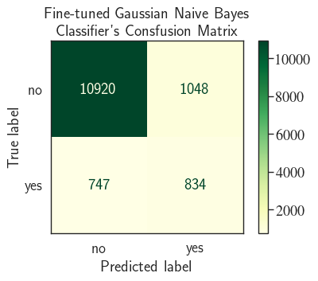
print(classification_report(y_tst, y_pred, digits=3))
precision recall f1-score support
0 0.936 0.912 0.924 11968
1 0.443 0.528 0.482 1581
accuracy 0.868 13549
macro avg 0.690 0.720 0.703 13549
weighted avg 0.878 0.868 0.872 13549
Precision-Recall curve for the fine-tuned GaussianNB classifier
from sklearn.metrics import auc
from sklearn.metrics import precision_recall_curve
from sklearn.metrics import plot_precision_recall_curve
from sklearn.metrics import average_precision_score
classifier = GaussianNB(var_smoothing=1e-9)
precisions = [] # true positive rates
recalls = [] # true positive rates
aucs = [] # area under PR curves
labels = []
# StratifiedShuffleSplit
num_splits = 10
cv = StratifiedShuffleSplit(n_splits=num_splits, random_state=123)
fig, ax = plt.subplots(1, 1, figsize=(10,10), dpi=200)
# X_all is the feature set and y_all is the target
for i, (train_index, test_index) in enumerate(cv.split(X_tr, y_tr)):
X_train, X_test = X[train_index], X[test_index]
y_train, y_test = y[train_index], y[test_index]
classifier.fit(X_train, y_train)
y_pred = NB.predict(X_test)
cm = confusion_matrix(y_test, y_pred)
probas = classifier.predict_proba(X_test)
viz = plot_precision_recall_curve(classifier, X_test, y_test,
alpha=0.4, lw=1, ax=ax)
pr_auc = average_precision_score(y_test, probas[:,1])
aucs.append(pr_auc)
labels.append('PR fold {} - AUC = {:.3f}'.format(i+1, pr_auc))
precisions.append(viz.precision)
recalls.append(viz.recall)
no_skill = len(y[y==1]) / len(y) # Taking the positive class to be "yes"/1
ax.plot([0, 1], [no_skill, no_skill], linestyle='--',
lw=1, color='r')
labels.append('No Skill classifier')
# The recall/precision vectors that are stored for each fold don't necessarily have
# the same length (Check yourself) but close enough. What I did to approximate them
# using vectors of the same length was to first, find the length of the minimum
# vector (call it 'min_vec_len'); and then create samples of the same length (='min_vec_len')
# for precision and recall instances
min_precision_vector_len = min([len(x) for x in precisions])
normlized_precisions = []
normlized_recalls = []
for i in range(len(precisions)):
# all ids will have the length 'min_precision_vector_len'
ids = sorted(np.random.choice(len(precisions[i]),
min_precision_vector_len,
replace=False)
)
normlized_precisions.append(precisions[i][ids])
normlized_recalls.append(recalls[i][ids])
mean_precision = np.mean(normlized_precisions, axis=0)
mean_recall = np.mean(normlized_recalls, axis=0)
mean_auc = auc(mean_recall, mean_precision)
std_auc = np.std(aucs)
ax.plot(mean_recall, mean_precision, color='b', lw=2, alpha=.8)
labels.append(r'Mean PR (AUC = %0.3f $\pm$ %0.3f)' % (mean_auc, std_auc))
std_precision = np.std(normlized_precisions, axis=0)
precisions_upper = np.minimum(mean_precision + std_precision, 1)
precisions_lower = np.maximum(mean_precision - std_precision, 0)
ax.fill_between(mean_recall, precisions_lower, precisions_upper, color='red', alpha=.2)
labels.append(r'$\pm$ 1 std. dev.')
ax.set(xlim=[-0.05, 1.05], ylim=[-0.05, 1.05],
title="PR curve for Gaussian naive Bayes classifier")
ax.scatter(cm[1,1]/sum(cm[1,:]), cm[1,1]/sum(cm[:,1]),s=100, lw=2, marker="x", color='black')
labels.append('Threshold=0.5')
ax.scatter(1, 1, s=40, lw=2, marker="o", color='orange')
labels.append('Perfect classifier')
ax.legend(labels, bbox_to_anchor=(1, 1), loc="upper left", fontsize=16)
ax.plot([0, 1, 1], [1, 1, 0],color='orange', linestyle=":", lw=0.6, alpha=0.6)
ax.plot(mean_recall, precisions_lower, linestyle=':', lw=0.5, color='red', alpha=.6)
ax.plot(mean_recall, precisions_upper, linestyle=':', lw=0.5, color='red', alpha=.6)
ax.set_facecolor('whitesmoke')
plt.show()
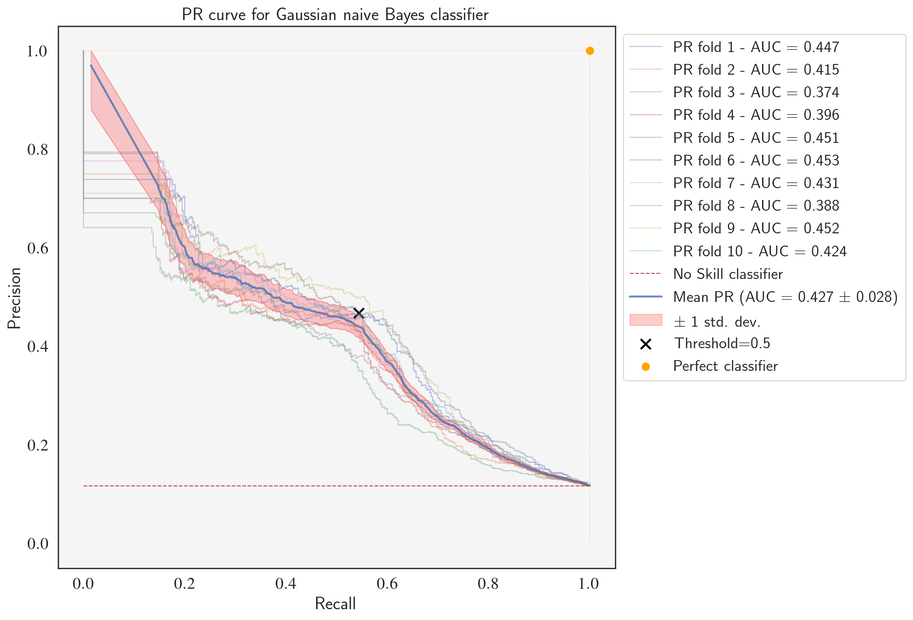
Notice that the mean PR is roughly equal to the cross-validation result that we obtaind using average-precision as the scoring metric (0.379 vs. 0.372). The single data point denoted by × shows the fine-tuned classifier's precision and recall using a threshold of 0.5.
ROC curve
A Receiver Operating Characteristic (ROC) curve is another way of visualizing the performance of a binary classification model for predicting the positive class. The x-axis of ROC curve denotes the False Positive Rate (FPR) and the y-axis indicates the True Positive Rate (TPR or Recall).
As we pointed out in definition of recall, the true positive rate shows the fraction of all examples in the positive class that were correctly predicted by the classifier.
$$ \text{TPR / Recall}=\frac{\text{TP}}{\text{TP + FN}} $$The false positive rate measures the fraction of examples among all examples in the negative class that were falsely predicted as positive, i.e.
$$ \text{FPR / Fallout}=\frac{\text{FP}}{\text{FP + TN}} $$Similar to the trade-off between the recall and precision for PR curve, improving the TPR usually comes at the expense of FPR, and vice versa.
ROC curve can be plotted by calculating the true positive and false positives ratios while varying the threshold value. This results in a curve that starts from the bottom left ($\text{threshold}\geq 1$) and ends at the top right ($\text{threshold}\leq 0$). The ROC Curve for the GaussianNB classifier is shown below. A no skill classifier has no preference between selecting the positive or negative class as the outcome. This means that every prediction has a 50-50 chance of being labeled as positive and belong to the population TPs + FPs or labeled as negative and belong to the population TNs + FNs.
The perfect, skillful classifier is plotted using the dashed orange line. It takes the TPR value of 1 for any threshold>0, meaning that the classfier doesn't make any False Negative predictions. In other words, all the positive observations have been correctly identified using the classifier.
Therefore, the TPR-to-FPR ratio is 1 for the no-skill classifier. The ROC curve is a popular method to analyze both the balanced and imbalanced binary classification problems as it is not biased to the majority or minority class.
ROC curve for the fine-tuned GaussianNB classifier
from sklearn.metrics import auc
from sklearn.metrics import plot_roc_curve
cv = StratifiedShuffleSplit(n_splits=num_splits, random_state=123)
classifier = GaussianNB(var_smoothing=1e-9)
tprs = [] # true positive rates
aucs = [] # area under ROC curves
conf_mats = [] # area under ROC curves
mean_fpr = np.linspace(0, 1, 100) # x-axis range
fig, ax = plt.subplots(1, 1, figsize=(10,10), dpi=200)
for i, (train_index, test_index) in enumerate(cv.split(X, y)):
X_train, X_test = X[train_index], X[test_index]
y_train, y_test = y[train_index], y[test_index]
classifier.fit(X_train, y_train)
viz = plot_roc_curve(classifier, X_test, y_test,
name='ROC fold {}'.format(i+1),
alpha=0.3, lw=1, ax=ax)
interp_tpr = np.interp(mean_fpr, viz.fpr, viz.tpr)
y_pred = classifier.predict(X_test)
conf_mats.append(confusion_matrix(y_test, y_pred))
interp_tpr[0] = 0.0
tprs.append(interp_tpr)
aucs.append(viz.roc_auc)
ax.plot([0, 1], [0, 1], linestyle='--', lw=2, color='r',
label='No skill classifier', alpha=.8)
mean_tpr = np.mean(tprs, axis=0)
mean_tpr[-1] = 1.0
mean_auc = auc(mean_fpr, mean_tpr)
std_auc = np.std(aucs)
ax.plot(mean_fpr, mean_tpr, color='b',
label=r'Mean ROC (AUC = %0.3f $\pm$ %0.3f)' % (mean_auc, std_auc),
lw=2, alpha=.8)
std_tpr = np.std(tprs, axis=0)
tprs_upper = np.minimum(mean_tpr + std_tpr, 1)
tprs_lower = np.maximum(mean_tpr - std_tpr, 0)
ax.fill_between(mean_fpr, tprs_lower, tprs_upper, color='red', alpha=.2,
label=r'$\pm$ 1 std. dev.')
ax.scatter(cm[0,1]/sum(cm[0,:]), cm[1,1]/sum(cm[1,:]),s=100, lw=2,
marker="x", color='black', label='Threshold=0.5')
ax.scatter(0, 1, s=40, lw=2, marker="o", color='orange', label='Perfect classifier')
ax.set(xlim=[-0.05, 1.05], ylim=[-0.05, 1.05],
title="ROC curve for Gaussian naive Bayes classifier")
ax.legend(bbox_to_anchor=(1, 1), loc="upper left", fontsize=16)
ax.plot([0, 0, 1],[0, 1, 1],color='orange', linestyle=":", lw=0.6, alpha=0.6)
ax.plot(mean_fpr, tprs_lower, linestyle=':', lw=0.5, color='red', alpha=.6)
ax.plot(mean_fpr, tprs_upper, linestyle=':', lw=0.5, color='red', alpha=.6)
ax.set_facecolor('whitesmoke')
plt.show()
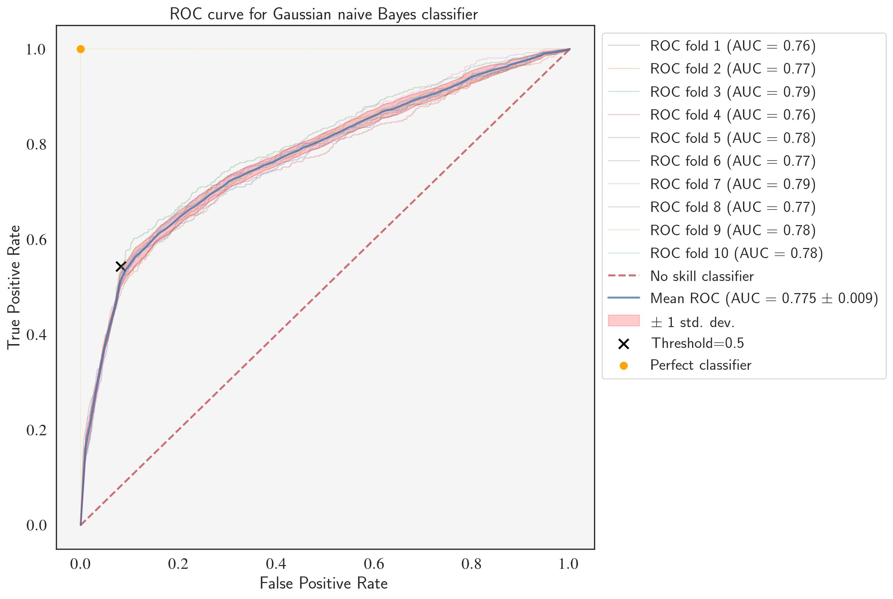
Fine-tuning the logistic regression classifier
# define models and parameters
model = LogisticRegression()
solvers = ['newton-cg', 'lbfgs', 'liblinear']
penalty = ['l2']
c_values = np.logspace(-2, 2, 5)
# define grid search
grid = dict(solver=solvers, penalty=penalty, C=c_values)
cv = RepeatedStratifiedKFold(n_splits=10, n_repeats=3, random_state=123)
grid_search = GridSearchCV(estimator=model, param_grid=grid, n_jobs=-1,
cv=cv, scoring='average_precision',error_score=0)
grid_result = grid_search.fit(X_tr, y_tr)
# summarize results
print("Best: %f using %s" % (grid_result.best_score_, grid_result.best_params_))
means = grid_result.cv_results_['mean_test_score']
stds = grid_result.cv_results_['std_test_score']
params = grid_result.cv_results_['params']
for mean, stdev, param in zip(means, stds, params):
print("%f (%f) with: %r" % (mean, stdev, param))
Best: 0.461648 using {'C': 100.0, 'penalty': 'l2', 'solver': 'newton-cg'}
0.431540 (0.016853) with: {'C': 0.01, 'penalty': 'l2', 'solver': 'newton-cg'}
0.409017 (0.028899) with: {'C': 0.01, 'penalty': 'l2', 'solver': 'lbfgs'}
0.429275 (0.016081) with: {'C': 0.01, 'penalty': 'l2', 'solver': 'liblinear'}
0.459138 (0.018614) with: {'C': 0.1, 'penalty': 'l2', 'solver': 'newton-cg'}
0.414676 (0.024518) with: {'C': 0.1, 'penalty': 'l2', 'solver': 'lbfgs'}
0.458790 (0.018766) with: {'C': 0.1, 'penalty': 'l2', 'solver': 'liblinear'}
0.461561 (0.019416) with: {'C': 1.0, 'penalty': 'l2', 'solver': 'newton-cg'}
0.420089 (0.016088) with: {'C': 1.0, 'penalty': 'l2', 'solver': 'lbfgs'}
0.460627 (0.018876) with: {'C': 1.0, 'penalty': 'l2', 'solver': 'liblinear'}
0.461607 (0.019552) with: {'C': 10.0, 'penalty': 'l2', 'solver': 'newton-cg'}
0.417623 (0.025003) with: {'C': 10.0, 'penalty': 'l2', 'solver': 'lbfgs'}
0.460805 (0.018992) with: {'C': 10.0, 'penalty': 'l2', 'solver': 'liblinear'}
0.461648 (0.019564) with: {'C': 100.0, 'penalty': 'l2', 'solver': 'newton-cg'}
0.418796 (0.024177) with: {'C': 100.0, 'penalty': 'l2', 'solver': 'lbfgs'}
0.460659 (0.019047) with: {'C': 100.0, 'penalty': 'l2', 'solver': 'liblinear'}
LR = LogisticRegression(C=100.0, penalty='l2', solver='newton-cg')
LR.fit(X_tr, y_tr)
y_pred = LR.predict(X_tst)
cm = confusion_matrix(y_tst, y_pred)
fig, ax = plt.subplots(1, 1, dpi=80)
cm_plot = ConfusionMatrixDisplay(confusion_matrix=cm,
display_labels=['no', 'yes'],
)
ax.set_title('Fine-tuned Logistic Regression \n Classifier\'s Consfusion Matrix')
print("Precision= {:.2f}% and Recall= {:.2f}%".format(
cm[1,1]/sum(cm[:,1])*100,
cm[1,1]/sum(cm[1,:])*100
))
cm_plot.plot(ax=ax, cmap='YlGn');
Precision= 65.63% and Recall= 22.71%
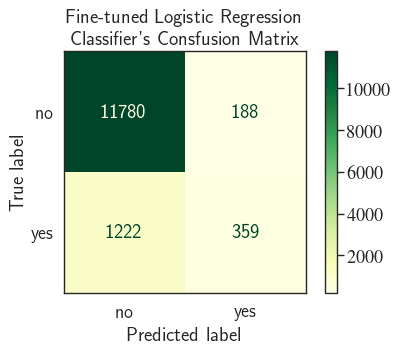
PR curve for the fine-tuned LogisticRegression classifier
classifier = LogisticRegression(C=100.0, penalty='l2', solver='newton-cg')
precisions = [] # true positive rates
recalls = [] # true positive rates
aucs = [] # area under PR curves
labels = []
# StratifiedKFold
num_splits = 10
cv = StratifiedShuffleSplit(n_splits=num_splits, random_state=123)
fig, ax = plt.subplots(1, 1, figsize=(10,10), dpi=200)
for i, (train_index, test_index) in enumerate(cv.split(X_tr, y_tr)):
X_train, X_test = X[train_index], X[test_index]
y_train, y_test = y[train_index], y[test_index]
classifier.fit(X_train, y_train)
probas = classifier.predict_proba(X_test)
viz = plot_precision_recall_curve(classifier, X_test, y_test,
alpha=0.2, lw=1, ax=ax)
pr_auc = average_precision_score(y_test, probas[:,1])
aucs.append(pr_auc)
labels.append('PR fold {} - AUC = {:.3f}'.format(i+1, pr_auc))
precisions.append(viz.precision)
recalls.append(viz.recall)
no_skill = len(y[y==1]) / len(y) # Taking the positive class to be "yes"/1
ax.plot([0, 1], [no_skill, no_skill], linestyle='--',
lw=1, color='r')
labels.append('No Skill classifier')
min_precision_vector_len = min([len(x) for x in precisions])
normlized_precisions = []
normlized_recalls = []
for i in range(len(precisions)):
# all ids will have the length 'min_precision_vector_len'
ids = sorted(np.random.choice(len(precisions[i]),
min_precision_vector_len,
replace=False)
)
normlized_precisions.append(precisions[i][ids])
normlized_recalls.append(recalls[i][ids])
mean_precision = np.mean(normlized_precisions, axis=0)
mean_recall = np.mean(normlized_recalls, axis=0)
mean_auc = auc(mean_recall, mean_precision)
std_auc = np.std(aucs)
ax.plot(mean_recall, mean_precision, color='b', lw=2, alpha=.8)
labels.append(r'Mean PR (AUC = %0.3f $\pm$ %0.3f)' % (mean_auc, std_auc))
std_precision = np.std(normlized_precisions, axis=0)
precisions_upper = np.minimum(mean_precision + std_precision, 1)
precisions_lower = np.maximum(mean_precision - std_precision, 0)
ax.fill_between(mean_recall, precisions_lower, precisions_upper, color='red', alpha=.2)
labels.append(r'$\pm$ 1 std. dev.')
ax.set(xlim=[-0.05, 1.05], ylim=[-0.05, 1.05],
title="PR curve for logistic regression classifier")
ax.scatter(cm[1,1]/sum(cm[1,:]), cm[1,1]/sum(cm[:,1]),s=100, lw=2, marker="x", color='black')
labels.append('Threshold=0.5')
ax.scatter(1, 1, s=40, lw=2, marker="o", color='orange')
labels.append('Perfect classifier')
ax.legend(labels, bbox_to_anchor=(1, 1), loc="upper left", fontsize=16)
ax.plot([0, 1, 1], [1, 1, 0],color='orange', linestyle=":", lw=0.6, alpha=0.6)
ax.plot(mean_recall, precisions_lower, linestyle=':', lw=0.5, color='red', alpha=.6)
ax.plot(mean_recall, precisions_upper, linestyle=':', lw=0.5, color='red', alpha=.6)
ax.set_facecolor('whitesmoke')
plt.show()
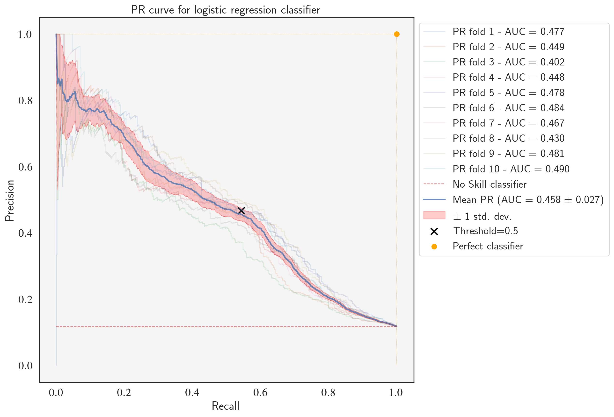
ROC curve for the fine-tuned LogisticRegression classifier
classifier = LogisticRegression(C=100.0, penalty='l2', solver='newton-cg')
tprs = [] # true positive rates
aucs = [] # area under ROC curves
conf_mats = [] # area under ROC curves
mean_fpr = np.linspace(0, 1, 100) # x-axis range
fig, ax = plt.subplots(1, 1, figsize=(10,10), dpi=200)
for i, (train_index, test_index) in enumerate(cv.split(X, y)):
X_train, X_test = X[train_index], X[test_index]
y_train, y_test = y[train_index], y[test_index]
classifier.fit(X_train, y_train)
viz = plot_roc_curve(classifier, X_test, y_test,
name='ROC fold {}'.format(i+1),
alpha=0.3, lw=1, ax=ax)
interp_tpr = np.interp(mean_fpr, viz.fpr, viz.tpr)
y_pred = classifier.predict(X_test)
conf_mats.append(confusion_matrix(y_test, y_pred))
interp_tpr[0] = 0.0
tprs.append(interp_tpr)
aucs.append(viz.roc_auc)
ax.plot([0, 1], [0, 1], linestyle='--', lw=2, color='r',
label='No skill classifier', alpha=.8)
mean_tpr = np.mean(tprs, axis=0)
mean_tpr[-1] = 1.0
mean_auc = auc(mean_fpr, mean_tpr)
std_auc = np.std(aucs)
ax.plot(mean_fpr, mean_tpr, color='b',
label=r'Mean ROC (AUC = %0.3f $\pm$ %0.3f)' % (mean_auc, std_auc),
lw=2, alpha=.8)
std_tpr = np.std(tprs, axis=0)
tprs_upper = np.minimum(mean_tpr + std_tpr, 1)
tprs_lower = np.maximum(mean_tpr - std_tpr, 0)
ax.fill_between(mean_fpr, tprs_lower, tprs_upper, color='red', alpha=.2,
label=r'$\pm$ 1 std. dev.')
ax.scatter(cm[0,1]/sum(cm[0,:]), cm[1,1]/sum(cm[1,:]),s=100, lw=2,
marker="x", color='black', label='Threshold=0.5')
ax.scatter(0, 1, s=40, lw=2, marker="o", color='orange', label='Perfect classifier')
ax.set(xlim=[-0.05, 1.05], ylim=[-0.05, 1.05],
title="ROC curve for logistic regression classifier")
ax.legend(bbox_to_anchor=(1, 1), loc="upper left", fontsize=16)
ax.plot([0, 0, 1],[0, 1, 1],color='orange', linestyle=":", lw=0.6, alpha=0.6)
ax.plot(mean_fpr, tprs_lower, linestyle=':', lw=0.5, color='red', alpha=.6)
ax.plot(mean_fpr, tprs_upper, linestyle=':', lw=0.5, color='red', alpha=.6)
ax.set_facecolor('whitesmoke')
plt.show()
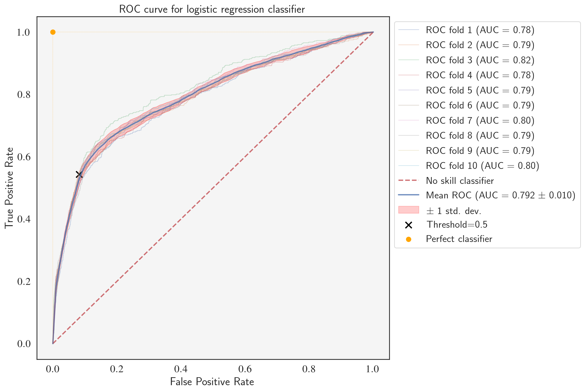
Comparing the fine-tuned models with each other and with the baseline models
num_splits = 10
cv = StratifiedKFold(n_splits=num_splits, random_state=123)
model_dict = {}
model_dict['LR'] = [LogisticRegression(C=100.0, penalty='l2', solver='newton-cg')]
# I tweaked the var_smoothing parameter a little bit (1e-9 to 1.1e-9)
# to slightly improve the AP
model_dict['NB'] = [GaussianNB(var_smoothing=1.1e-9)]
for model_name, model in model_dict.items():
# train the model
t_start = time.time()
cv_results = cross_val_score(model[0], X_tr, y_tr, cv=cv, scoring='average_precision')
# save the results
calc_time = time.time() - t_start
model_dict[model_name].append(cv_results)
model_dict[model_name].append(calc_time)
print(("{0} model gives an AP of {1:.2f}% with a standard deviation "
"{2:.2f} (took {3:.1f} seconds)").format(model_name,
100*cv_results.mean(),
100*cv_results.std(),
calc_time))
LR model gives an AP of 46.19% with a standard deviation 2.27 (took 68.1 seconds) NB model gives an AP of 43.17% with a standard deviation 2.57 (took 1.0 seconds)
After fine-tuning, the logistic regression model outperforms the Naive Bayes classifier with a higher mean PR-AUC (0.458 vs. 0.427), average precision (46.19% vs. 43.17%), and mean ROC-AUC (0.792 vs. 0.775). Notice that the values of average precision are very close to mean PR-AUC which proves that it can safely be used as the scoring function representing PR-AUC.
Both models outperformed the baseline models, however, the improvement for the logistic regression classifier was more significant (46.19% comapred to 40.75% of the baseline model) than the naive Bayes classifier (43.17% comapred to 43.02% of the baseline model).
The main purpose of including the ROC curves in the analysis was to demonstrate that PR curve provides a more realistic measure of the performance of the classifier for imbalanced data compared to ROC curve. Even though ROC curves are the most widely used evaluation method for binary classification problems with balanced and imbalanced data, they're most approapriate when used for balanced data. ROC curves may provide an overly optimistic view of the performance of the model whereas PR curves are more appropriate when it comes to imbalance datasets. PR curve focuses on the performance of a classifier on the positive (minority class) only.
Finding the Optimal Threshold for PR Curve
Finally, we'd like to find the threshold that gives the best balance of precision and recall. We could locate this threshold using the Harmonic Mean of the two. Harmonic Mean or H-Mean of precision and recall is called F-measure or F-score which when optimized, will seek a balance between the precision and recall. The highest possible value of an F-score is 1.0, indicating perfect precision and recall, and the lowest possible value is 0, which happens if either of the precision or the recall is zero.
$$ \text{F-score} = \frac{2 \times \text{Precision} \times \text{Recall}}{\text{Precision} + \text{Recall}} $$ or $$ \frac{1}{\text{F-score}} = \frac{1}{\dfrac{1}{2}\big(\dfrac{1}{\text{Precision}} + \dfrac{1}{\text{Recall}}\big)} $$One way to think about why optimizing F-score gives the best balance between precision and recall is that we can not get a high F-score if either one is very low. The threshold that gives the highest F-score is what we're looking for.
classifier = LogisticRegression(C=100.0, penalty='l2', solver='newton-cg')
precisions = [] # true positive rates
recalls = [] # true positive rates
aucs = [] # area under ROC curves
thresholds_ = [] # thresholds
labels = []
num_splits = 10
cv = StratifiedShuffleSplit(n_splits=num_splits, test_size=0.3, random_state=123)
fig, ax = plt.subplots(1, 1, figsize=(10,10), dpi=200)
for i, (train_index, test_index) in enumerate(cv.split(X_tr, y_tr)):
X_train, X_test = X[train_index], X[test_index]
y_train, y_test = y[train_index], y[test_index]
classifier.fit(X_train, y_train)
probas = classifier.predict_proba(X_test)
plot_precision_recall_curve(classifier, X_test, y_test,
alpha=0.2, lw=1, ax=ax)
precision, recall, thresholds = precision_recall_curve(y_test, probas[:,1])
pr_auc = average_precision_score(y_test, probas[:,1])
aucs.append(pr_auc)
labels.append('PR fold {} - AUC = {:.3f}'.format(i+1, pr_auc))
precisions.append(precision)
recalls.append(recall)
thresholds_.append(thresholds)
no_skill = len(y[y==1]) / len(y) # Taking the positive class to be "yes"/1
ax.plot([0, 1], [no_skill, no_skill], linestyle='--',
lw=1, color='r')
labels.append('No Skill classifier')
min_vector_len = min([len(x) for x in precisions])
normlized_precisions = []
normlized_recalls = []
normlized_thresholds = []
for i in range(len(f_scores)):
# all ids will have the length 'min_precision_vector_len'
ids = sorted(np.random.choice(len(precisions[i]),
min_vector_len,
replace=False)
)
normlized_precisions.append(precisions[i][ids])
normlized_recalls.append(recalls[i][ids])
# -1 because len(thresholds_) = len(precisions) - 1
ids = sorted(np.random.choice(len(thresholds_[i]),
min_vector_len-1,
replace=False)
)
normlized_thresholds.append(thresholds_[i][ids])
mean_precision = np.mean(normlized_precisions, axis=0)
mean_recall = np.mean(normlized_recalls, axis=0)
mean_threshold = np.mean(normlized_thresholds, axis=0)
mean_f_scores = [(mean_precision[i], mean_recall[i], mean_threshold[i]) for i in range(len(mean_precision)-1)]
best_p, best_r, best_t = sorted(mean_f_scores, key=lambda x: -x[0]*x[1]/(x[0]+x[1]))[0]
best_f_score = 2*best_p*best_r/(best_p+best_r)
mean_auc = auc(mean_recall, mean_precision)
std_auc = np.std(aucs)
ax.plot(mean_recall, mean_precision, color='b', lw=2, alpha=.8)
labels.append(r'Mean PR (AUC = %0.3f $\pm$ %0.3f)' % (mean_auc, std_auc))
std_precision = np.std(normlized_precisions, axis=0)
precisions_upper = np.minimum(mean_precision + std_precision, 1)
precisions_lower = np.maximum(mean_precision - std_precision, 0)
ax.fill_between(mean_recall, precisions_lower, precisions_upper, color='red', alpha=.2)
labels.append(r'$\pm$ 1 std. dev.')
ax.scatter(best_r, best_p, s=100, lw=3, marker="x", color='green')
labels.append('best threshold = {:.3f} (F-score={:.2f})'.format(best_t, best_f_score))
ax.set(xlim=[-0.05, 1.05], ylim=[-0.05, 1.05],
title="PR curve for logistic regression classifier")
ax.scatter(1, 1, s=40, lw=2, marker="o", color='orange')
labels.append('Perfect classifier')
ax.legend(labels, bbox_to_anchor=(1, 1), loc="upper left", fontsize=16)
ax.plot([0, 1, 1], [1, 1, 0],color='orange', linestyle=":", lw=0.6, alpha=0.6)
ax.plot(mean_recall, precisions_lower, linestyle=':', lw=0.5, color='red', alpha=.6)
ax.plot(mean_recall, precisions_upper, linestyle=':', lw=0.5, color='red', alpha=.6)
ax.set_facecolor('whitesmoke')
plt.show()
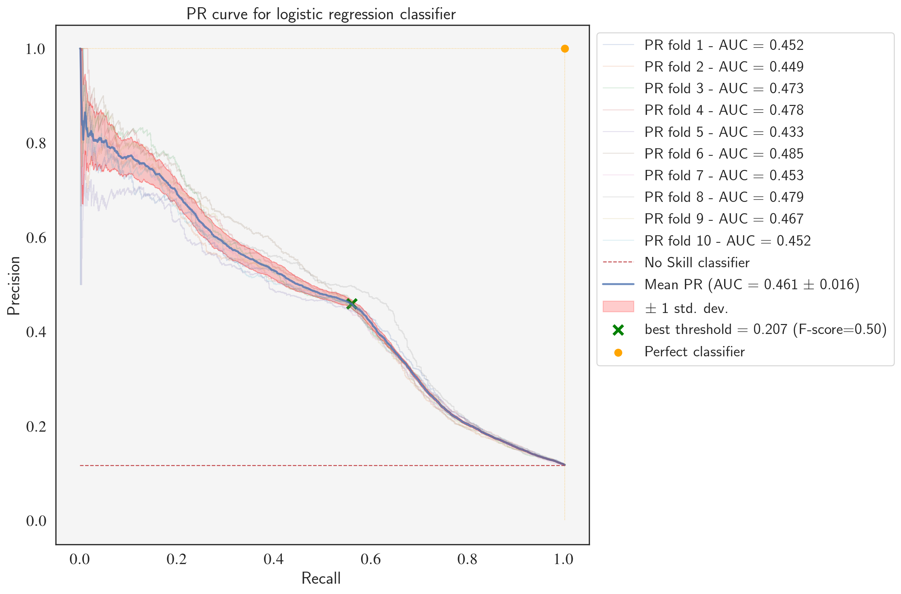
Precision and Recall Trade-off
Using thresholds, the variation of precision and recall can be visualized. You can see the trade-off between the two.
fig, ax = plt.subplots(1, 1, figsize=(6,6), dpi=100)
ax.plot(mean_threshold, mean_precision[1:], linestyle='--', lw=2, color='b', label='precision')
ax.plot(mean_threshold, mean_recall[1:], linestyle='--', lw=2, color='r', label='recall')
plt.axvline(x=best_t, linestyle=':', lw=2, color='g', label='best threshold')
ax.set_xlabel('threshold')
ax.legend(loc="upper center", fontsize=14)
plt.title('Precision and Recall Trade-off')
plt.show();
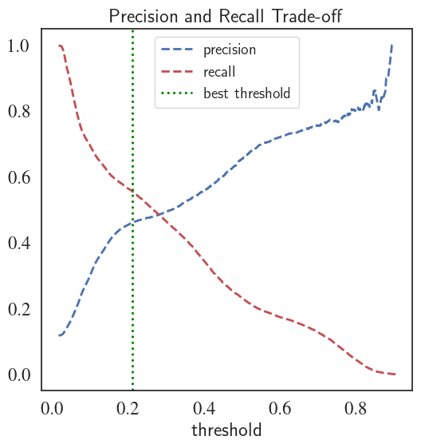
Summary and Conclusion
- Using converntional scoring metrics such as accuracy may result in misleading conclusions regarding the performance of the classifier .
- Precision-Recall curve is recommended for datasets with severe imbalance, especially when correct prediction of one class is more important than the other
- ROC curves are also used to treat imbalanced datasets, however, they may provide a overly optimistic view regarding the accuracy of the classifier
- Depending on the objective of the problem and the priorities of the business (e.g. maximizing recall, minimizing fpr etc.), appropriate metric must be chosen to achieve the best model
- Once the model is picked, finetuning of the parameters might help further improve the performance of the baseline classifier
- Exploratory data analysis can really help with identifying the hidden correlations between the features and outcome, especially for categorical variables.
- Complexity of a classifier doesn't always mean that it will provide a superior performance.